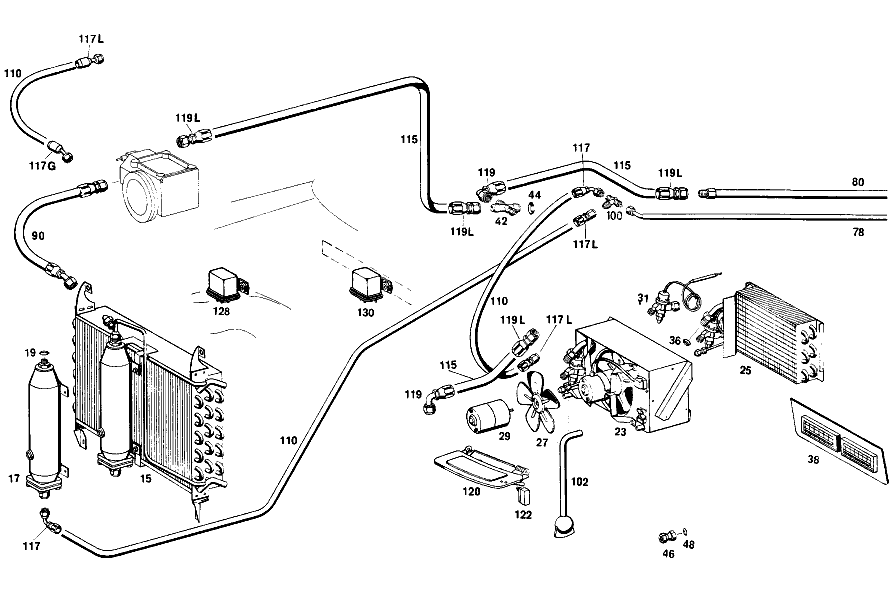

| № | Артикул | Название | Кол. | Примечание | Ограничение |
|---|---|---|---|---|---|
| 15 | A 100 835 03 70 | КОНДЕНСАТОР | - | Z 55.607/01, Z 55.607/02, Z 55.607/03, Z 55.607/04, Z 55.607/05 | |
| 15 | A 100 830 02 70 | КОНДЕНСАТОР | 1 | Z 55.607/01, Z 55.607/02, Z 55.607/03, Z 55.607/04, Z 55.607/05 [020] UP TO CHASSIS 000791 ALSO INSTALLED ON 000795 | |
| 17 | A 000 835 18 71 | - БАЧОК | 1 | Z 55.607/01, Z 55.607/02, Z 55.607/03, Z 55.607/04, Z 55.607/05 [020] UP TO CHASSIS 000791 ALSO INSTALLED ON 000795 | |
| 19 | A 000 835 02 98 | - уплотнение | - | Z 55.607/01, Z 55.607/02, Z 55.607/03, Z 55.607/04, Z 55.607/05 | |
| 19 | A 000 835 65 98 | - уплотнение | 1 | НА БАЧКЕ ЖИДКОСТИ Z 55.607/01, Z 55.607/02, Z 55.607/03, Z 55.607/04, Z 55.607/05 [020] UP TO CHASSIS 000791 ALSO INSTALLED ON 000795 | |
| 23 | A 100 835 00 74 | ИСПАРИТЕЛЬ | 1 | (IN DRIVER'S COMPARTMENT) Z 55.607/01, Z 55.607/02, Z 55.607/03, Z 55.607/04, Z 55.607/05 [020] UP TO CHASSIS 000791 ALSO INSTALLED ON 000795 | |
| 25 | A 000 835 02 74 | - ИСПАРИТЕЛЬ | 1 | Z 55.607/01, Z 55.607/02, Z 55.607/03, Z 55.607/04, Z 55.607/05 [020] UP TO CHASSIS 000791 ALSO INSTALLED ON 000795 | |
| 27 | A 000 835 16 04 | - ВЕНТИЛЯТОР | 1 | Z 55.607/01, Z 55.607/02, Z 55.607/03, Z 55.607/04, Z 55.607/05 [020] UP TO CHASSIS 000791 ALSO INSTALLED ON 000795 | |
| 29 | A 100 835 02 02 | - МОТОР | - | Z 55.607/01, Z 55.607/02, Z 55.607/03, Z 55.607/04, Z 55.607/05 | |
| 29 | A 004 820 49 42 | - ЭЛЕКТРОМОТОР | 1 | Z 55.607/01, Z 55.607/02, Z 55.607/03, Z 55.607/04, Z 55.607/05 [020] UP TO CHASSIS 000791 ALSO INSTALLED ON 000795 | |
| 31 | A 000 835 10 20 | - КЛАПАН РЕГУЛИРОВОЧНЫЙ | 1 | Z 55.607/01, Z 55.607/02, Z 55.607/03, Z 55.607/04, Z 55.607/05 [020] UP TO CHASSIS 000791 ALSO INSTALLED ON 000795 | |
| 36 | A 000 835 02 98 | - уплотнение | - | Z 55.607/01, Z 55.607/02, Z 55.607/03, Z 55.607/04, Z 55.607/05 | |
| 36 | A 000 835 65 98 | - уплотнение | 1 | ИСПАРИТЕЛЬ Z 55.607/01, Z 55.607/02, Z 55.607/03, Z 55.607/04, Z 55.607/05 [020] UP TO CHASSIS 000791 ALSO INSTALLED ON 000795 | |
| 38 | A 100 830 01 64 | Обшивка | 1 | Z 55.607/01, Z 55.607/02, Z 55.607/03, Z 55.607/04, Z 55.607/05 [001] ENCLOSE SAMPLE OF VENEER WHEN ORDERING [020] UP TO CHASSIS 000791 ALSO INSTALLED ON 000795 | |
| 42 | A 000 990 01 87 | КРЕСТОВИНА | 1 | Z 55.607/01, Z 55.607/02, Z 55.607/03, Z 55.607/04, Z 55.607/05 [020] UP TO CHASSIS 000791 ALSO INSTALLED ON 000795 | |
| 44 | A 000 835 03 98 | уплотнение | - | Z 55.607/01, Z 55.607/02, Z 55.607/03, Z 55.607/04, Z 55.607/05 | |
| 44 | A 000 835 67 98 | уплотнение | 1 | Z 55.607/01, Z 55.607/02, Z 55.607/03, Z 55.607/04, Z 55.607/05 [020] UP TO CHASSIS 000791 ALSO INSTALLED ON 000795 | |
| 46 | A 000 990 32 54 | ГАЙКА | 2 | Z 55.607/01, Z 55.607/02, Z 55.607/03, Z 55.607/04, Z 55.607/05 [020] UP TO CHASSIS 000791 ALSO INSTALLED ON 000795 | |
| 48 | A 000 835 02 98 | уплотнение | - | Z 55.607/01, Z 55.607/02, Z 55.607/03, Z 55.607/04, Z 55.607/05 | |
| 48 | A 000 835 65 98 | уплотнение | 4 | Z 55.607/01, Z 55.607/02, Z 55.607/03, Z 55.607/04, Z 55.607/05 [020] UP TO CHASSIS 000791 ALSO INSTALLED ON 000795 | |
| 50 | A 100 831 10 62 | КАНАЛ ВОЗДУШНЫЙ | 1 | Z 55.607/01, Z 55.607/02, Z 55.607/03, Z 55.607/04, Z 55.607/05 [020] UP TO CHASSIS 000791 ALSO INSTALLED ON 000795 | |
| 53 | A 000 835 20 02 | - МОТОР | 1 | Z 55.607/01, Z 55.607/02, Z 55.607/03, Z 55.607/04, Z 55.607/05 [020] UP TO CHASSIS 000791 ALSO INSTALLED ON 000795 | |
| 56 | A 001 987 17 40 | - РЕЗИНОВЫЙ УПОР | 3 | Z 55.607/01, Z 55.607/02, Z 55.607/03, Z 55.607/04, Z 55.607/05 [020] UP TO CHASSIS 000791 ALSO INSTALLED ON 000795 | |
| 59 | A 000 835 01 74 | - ИСПАРИТЕЛЬ | 1 | Z 55.607/01, Z 55.607/02, Z 55.607/03, Z 55.607/04, Z 55.607/05 [020] UP TO CHASSIS 000791 ALSO INSTALLED ON 000795 | |
| 62 | A 000 835 02 98 | - уплотнение | - | Z 55.607/01, Z 55.607/02, Z 55.607/03, Z 55.607/04, Z 55.607/05 | |
| 62 | A 000 835 65 98 | - уплотнение | 1 | Z 55.607/01, Z 55.607/02, Z 55.607/03, Z 55.607/04, Z 55.607/05 [020] UP TO CHASSIS 000791 ALSO INSTALLED ON 000795 | |
| 65 | A 000 835 11 20 | - КЛАПАН РЕГУЛИРОВОЧНЫЙ | 1 | Z 55.607/01, Z 55.607/02, Z 55.607/03, Z 55.607/04, Z 55.607/05 [020] UP TO CHASSIS 000791 ALSO INSTALLED ON 000795 | |
| 68 | A 000 835 04 98 | - уплотнение | - | Z 55.607/01, Z 55.607/02, Z 55.607/03, Z 55.607/04, Z 55.607/05 | |
| 68 | A 000 835 66 98 | - уплотнение | 1 | Z 55.607/01, Z 55.607/02, Z 55.607/03, Z 55.607/04, Z 55.607/05 [020] UP TO CHASSIS 000791 ALSO INSTALLED ON 000795 | |
| 70 | A 000 835 05 98 | - уплотнение | 1 | Z 55.607/01, Z 55.607/02, Z 55.607/03, Z 55.607/04, Z 55.607/05 [020] UP TO CHASSIS 000791 ALSO INSTALLED ON 000795 | |
| 71 | A 000 835 00 79 | - Термостат | 1 | Z 55.607/01, Z 55.607/02, Z 55.607/03, Z 55.607/04, Z 55.607/05 [020] UP TO CHASSIS 000791 ALSO INSTALLED ON 000795 | |
| 73 | A 100 800 34 75 | - ЭЛЕМЕНТ | - | Z 55.607/01, Z 55.607/02, Z 55.607/03, Z 55.607/04, Z 55.607/05 | |
| 73 | A 100 800 22 75 | - ЭЛЕМЕНТ | 1 | Z 55.607/01, Z 55.607/02, Z 55.607/03, Z 55.607/04, Z 55.607/05 | |
| 75 | A 100 805 00 90 | - КОЛПАЧОК | 1 | Z 55.607/01, Z 55.607/02, Z 55.607/03, Z 55.607/04, Z 55.607/05 | |
| 78 | A 100 830 04 63 | ТРУБОПРОВОД | 1 | Z 55.607/01, Z 55.607/03 [020] UP TO CHASSIS 000791 ALSO INSTALLED ON 000795 | |
| 80 | A 100 830 05 63 | ТРУБОПРОВОД | 1 | Z 55.607/01, Z 55.607/03 [020] UP TO CHASSIS 000791 ALSO INSTALLED ON 000795 | |
| 90 | A 100 835 23 97 | ШЛАНГ | - | Z 55.607/01, Z 55.607/02, Z 55.607/03, Z 55.607/04, Z 55.607/05 | |
| 90 | A 000 997 21 52 | Шланг | 1 | КОМПРЕССОР К КОНДЕНСАТОРУ 760 MM Z 55.607/01, Z 55.607/02, Z 55.607/03, Z 55.607/04, Z 55.607/05 [020] UP TO CHASSIS 000791 ALSO INSTALLED ON 000795 [035] LESS HOSE CONNECTIONS | |
| 100 | A 000 990 18 70 | ТРОЙНИК | 1 | Z 55.607/01, Z 55.607/02, Z 55.607/03, Z 55.607/04, Z 55.607/05 [020] UP TO CHASSIS 000791 ALSO INSTALLED ON 000795 | |
| 102 | A 100 835 14 97 | ШЛАНГ | 1 | Z 55.607/01, Z 55.607/02, Z 55.607/03, Z 55.607/04, Z 55.607/05 [020] UP TO CHASSIS 000791 ALSO INSTALLED ON 000795 | |
| 110 | A 000 997 17 52 | - Шланг | 1 | N.W.: 8 5250 MM Z 55.607/01, Z 55.607/02, Z 55.607/03, Z 55.607/04, Z 55.607/05 [035] LESS HOSE CONNECTIONS | |
| 113 | A 000 997 21 52 | - Шланг | 1 | N.W.: 10 6000 MM Z 55.607/01, Z 55.607/02, Z 55.607/03, Z 55.607/04, Z 55.607/05 [035] LESS HOSE CONNECTIONS | |
| 115 | A 000 997 23 52 | - Шланг | 1 | N.W.: 13 6000 MM Z 55.607/01, Z 55.607/02, Z 55.607/03, Z 55.607/04, Z 55.607/05 [035] LESS HOSE CONNECTIONS | |
| 117 | A 000 997 01 68 | СОЕДИНИТЕЛЬ | 1 | 90\-DEGREE ANGLE;I.D.,8MM 5/8" Z 55.607/01, Z 55.607/02, Z 55.607/03, Z 55.607/04, Z 55.607/05 | |
| 117G | A 000 997 05 68 | СОЕДИНИТЕЛЬ | 1 | 135\-DEGREE ANGLE;I.D.,8MM 5/8" Z 55.607/01, Z 55.607/02, Z 55.607/03, Z 55.607/04, Z 55.607/05 | |
| 117L | A 000 997 51 68 | Штуцер шланга | 1 | 180\-DEGREE ANGLE;I.D.,8MM 5/8" Z 55.607/01, Z 55.607/02, Z 55.607/03, Z 55.607/04, Z 55.607/05 | |
| 118 | A 000 997 54 68 | Штуцер шланга | 1 | 180\-DEGREE ANGLE;I.D.,10MM 3/4" Z 55.607/01, Z 55.607/02, Z 55.607/03, Z 55.607/04, Z 55.607/05 | |
| 118G | A 000 997 17 68 | Штуцер шланга | 1 | 7/8";ANGLE,135 DEGS.;I.D.10 MM 7/8" NW 10 Z 55.607/01, Z 55.607/02, Z 55.607/03, Z 55.607/04, Z 55.607/05 | |
| 119 | A 000 997 21 68 | Штуцер шланга | 1 | 90 ГРАДУСОВ 7/8" NW 13 Z 55.607/01, Z 55.607/02, Z 55.607/03, Z 55.607/04, Z 55.607/05 | |
| 119G | A 000 997 23 68 | Штуцер шланга | 1 | 7/8";ANGLE,135 DEGS.;I.D.13 MM 7/8" NW 13 Z 55.607/01, Z 55.607/02, Z 55.607/03, Z 55.607/04, Z 55.607/05 | |
| 119L | A 000 997 55 68 | СОЕДИНИТЕЛЬ | 1 | 7/8";ANGLE,180 DEGS.;I.D.13 MM 7/8" NW 13 Z 55.607/01, Z 55.607/02, Z 55.607/03, Z 55.607/04, Z 55.607/05 | |
| 120 | A 100 830 20 42 | КРЫШКА | 1 | Z 55.607/01, Z 55.607/02, Z 55.607/03, Z 55.607/04, Z 55.607/05 | |
| 122 | A 100 835 00 73 | ВЫКЛЮЧАТЕЛЬ | 1 | Z 55.607/01, Z 55.607/02, Z 55.607/03, Z 55.607/04, Z 55.607/05 | |
| 124 | A 100 830 13 62 | КОЖУХ СИСТЕМЫ ОТОПЛЕНИЯ | 1 | СЛЕВА Z 55.607/01, Z 55.607/02, Z 55.607/03, Z 55.607/04, Z 55.607/05 [020] UP TO CHASSIS 000791 ALSO INSTALLED ON 000795 | |
| 128 | A 000 542 58 19 | Контактор | 1 | Z 55.607/01, Z 55.607/02, Z 55.607/03, Z 55.607/04, Z 55.607/05 [020] UP TO CHASSIS 000791 ALSO INSTALLED ON 000795 | |
| 130 | A 000 542 59 19 | Контактор | 2 | Z 55.607/01, Z 55.607/02, Z 55.607/03, Z 55.607/04, Z 55.607/05 [020] UP TO CHASSIS 000791 ALSO INSTALLED ON 000795 | |
| 134 | A 100 830 16 43 | РАСПРЕДЕЛИТЕЛЬ ВОЗДУХА | 1 | Z 55.607/01, Z 55.607/02, Z 55.607/03, Z 55.607/04, Z 55.607/05 [020] UP TO CHASSIS 000791 ALSO INSTALLED ON 000795 | |
| 139 | A 100 800 34 75 | - ЭЛЕМЕНТ | - | Z 55.607/01, Z 55.607/02, Z 55.607/03, Z 55.607/04, Z 55.607/05 | |
| 139 | A 100 800 22 75 | - ЭЛЕМЕНТ | 1 | Z 55.607/01, Z 55.607/02, Z 55.607/03, Z 55.607/04, Z 55.607/05 [020] UP TO CHASSIS 000791 ALSO INSTALLED ON 000795 | |
| 141 | A 100 805 00 90 | - КОЛПАЧОК | 1 | Z 55.607/01, Z 55.607/02, Z 55.607/03, Z 55.607/04, Z 55.607/05 [020] UP TO CHASSIS 000791 ALSO INSTALLED ON 000795 | |
| 145 | A 100 830 00 64 | Обшивка | 1 | Z 55.607/01, Z 55.607/02, Z 55.607/03, Z 55.607/04, Z 55.607/05 [020] UP TO CHASSIS 000791 ALSO INSTALLED ON 000795 | |
| 150 | A 100 680 13 40 | НАСТИЛ | 1 | ПОЛ ВОДИТЕЛЯ СЛЕВА Рулевое управление: Влево Z 55.607/01, Z 55.607/02, Z 55.607/03, Z 55.607/04, Z 55.607/05 [406] ПРИ ЗАКАЗЕ УКАЗЫВАТЬ НОМЕР ЦВЕТА [021] FROM CHASSIS 000792 EXCEPT FOR 000795 [038] FOR COLOR AND CODE NUMBERS,SEE FOOTN.39 AND 40 [039] UP TO CHASSIS 002417 SEE FOOTN.41 | |
| 153 | A 100 680 11 45 | НАСТИЛ | 1 | AT EVAPORATOR,LATERAL LEFT Z 55.607/01 [406] ПРИ ЗАКАЗЕ УКАЗЫВАТЬ НОМЕР ЦВЕТА [021] FROM CHASSIS 000792 EXCEPT FOR 000795 [038] FOR COLOR AND CODE NUMBERS,SEE FOOTN.39 AND 40 [039] UP TO CHASSIS 002417 SEE FOOTN.41 | |
| 155 | A 100 680 13 45 | НАСТИЛ | 1 | AT EVAPORATOR, TOP Z 55.607/01 [406] ПРИ ЗАКАЗЕ УКАЗЫВАТЬ НОМЕР ЦВЕТА [021] FROM CHASSIS 000792 EXCEPT FOR 000795 [038] FOR COLOR AND CODE NUMBERS,SEE FOOTN.39 AND 40 [039] UP TO CHASSIS 002417 SEE FOOTN.41 | |
| 157 | A 100 680 15 45 | НАСТИЛ | 1 | AT AIR DUCT,LATERAL LEFT Z 55.607/01, Z 55.607/02, Z 55.607/03, Z 55.607/04, Z 55.607/05 [406] ПРИ ЗАКАЗЕ УКАЗЫВАТЬ НОМЕР ЦВЕТА [021] FROM CHASSIS 000792 EXCEPT FOR 000795 [038] FOR COLOR AND CODE NUMBERS,SEE FOOTN.39 AND 40 [039] UP TO CHASSIS 002417 SEE FOOTN.41 | |
| 159 | A 100 680 18 17 | ПАНЕЛЬ | 1 | Рулевое управление: Влево Z 55.607/01, Z 55.607/02, Z 55.607/03, Z 55.607/04, Z 55.607/05 [406] ПРИ ЗАКАЗЕ УКАЗЫВАТЬ НОМЕР ЦВЕТА [021] FROM CHASSIS 000792 EXCEPT FOR 000795 | |
| 161 | A 100 680 17 45 | НАСТИЛ | 1 | AT AIR DUCT,TOP Z 55.607/01, Z 55.607/02, Z 55.607/03, Z 55.607/04, Z 55.607/05 [406] ПРИ ЗАКАЗЕ УКАЗЫВАТЬ НОМЕР ЦВЕТА [021] FROM CHASSIS 000792 EXCEPT FOR 000795 | |
| 163 | A 100 680 14 45 | НАСТИЛ | 1 | OVER TUNNEL IN THE REAR Z 55.607/01, Z 55.607/02, Z 55.607/03, Z 55.607/04, Z 55.607/05 [406] ПРИ ЗАКАЗЕ УКАЗЫВАТЬ НОМЕР ЦВЕТА [021] FROM CHASSIS 000792 EXCEPT FOR 000795 [038] FOR COLOR AND CODE NUMBERS,SEE FOOTN.39 AND 40 [039] UP TO CHASSIS 002417 SEE FOOTN.41 | |
| 165 | A 100 821 03 14 | СОПРОТИВЛЕНИЕ | 1 | COOLING BLOWER Z 55.607/01, Z 55.607/02, Z 55.607/03, Z 55.607/04, Z 55.607/05 [021] FROM CHASSIS 000792 EXCEPT FOR 000795 | |
| 172 | A 100 835 03 70 | КОНДЕНСАТОР | - | Z 55.607/01, Z 55.607/02, Z 55.607/03, Z 55.607/04, Z 55.607/05 [021] FROM CHASSIS 000792 EXCEPT FOR 000795 | |
| 174 | A 000 835 18 71 | БАЧОК | 1 | Z 55.607/01, Z 55.607/02, Z 55.607/03, Z 55.607/04, Z 55.607/05 [021] FROM CHASSIS 000792 EXCEPT FOR 000795 | |
| 176 | A 000 835 02 98 | - уплотнение | - | Z 55.607/01, Z 55.607/02, Z 55.607/03, Z 55.607/04, Z 55.607/05 | |
| 176 | A 000 835 65 98 | - уплотнение | 1 | Z 55.607/01, Z 55.607/02, Z 55.607/03, Z 55.607/04, Z 55.607/05 [021] FROM CHASSIS 000792 EXCEPT FOR 000795 | |
| 178 | A 100 830 08 58 | ИСПАРИТЕЛЬ | 1 | Z 55.607/01 [021] FROM CHASSIS 000792 EXCEPT FOR 000795 | |
| 181 | A 000 835 03 74 | - ИСПАРИТЕЛЬ | 1 | Z 55.607/01, Z 55.607/02, Z 55.607/03, Z 55.607/04, Z 55.607/05 [021] FROM CHASSIS 000792 EXCEPT FOR 000795 | |
| 183 | A 100 830 00 08 | - ВЕНТИЛЯТОР | 1 | Z 55.607/01, Z 55.607/02, Z 55.607/03, Z 55.607/04, Z 55.607/05 [021] FROM CHASSIS 000792 EXCEPT FOR 000795 | |
| 186 | A 108 830 03 43 | - РАСПРЕДЕЛИТЕЛЬ ВОЗДУХА | 2 | СПЕРЕДИ Z 55.607/01, Z 55.607/02, Z 55.607/03, Z 55.607/04, Z 55.607/05 [021] FROM CHASSIS 000792 EXCEPT FOR 000795 | |
| 188 | A 100 843 00 72 | - ФОРСУНКА | 2 | СБОКУ Z 55.607/01, Z 55.607/02, Z 55.607/03, Z 55.607/04, Z 55.607/05 [021] FROM CHASSIS 000792 EXCEPT FOR 000795 | |
| 190 | A 000 835 12 20 | - КЛАПАН РЕГУЛИРОВОЧНЫЙ | 1 | Z 55.607/01, Z 55.607/02, Z 55.607/03, Z 55.607/04, Z 55.607/05 [021] FROM CHASSIS 000792 EXCEPT FOR 000795 | |
| 193 | A 100 830 02 64 | Обшивка | 1 | Z 55.607/01, Z 55.607/02, Z 55.607/03, Z 55.607/04, Z 55.607/05 [021] FROM CHASSIS 000792 EXCEPT FOR 000795 | |
| 200 | A 000 990 32 54 | ГАЙКА | 2 | Z 55.607/01, Z 55.607/02, Z 55.607/03, Z 55.607/04, Z 55.607/05 [021] FROM CHASSIS 000792 EXCEPT FOR 000795 | |
| 202 | A 000 835 02 98 | уплотнение | - | Z 55.607/01, Z 55.607/02, Z 55.607/03, Z 55.607/04, Z 55.607/05 | |
| 202 | A 000 835 65 98 | уплотнение | 2 | Z 55.607/01, Z 55.607/02, Z 55.607/03, Z 55.607/04, Z 55.607/05 [021] FROM CHASSIS 000792 EXCEPT FOR 000795 | |
| 204 | A 100 830 03 64 | Обшивка | 1 | СЛЕВА Рулевое управление: Влево Z 55.607/01, Z 55.607/02, Z 55.607/03, Z 55.607/04, Z 55.607/05 [021] FROM CHASSIS 000792 EXCEPT FOR 000795 | |
| 209 | A 100 831 13 62 | КОРОБ ВЕНТИЛЯТОРА | 1 | Z 55.607/01, Z 55.607/02, Z 55.607/03, Z 55.607/04, Z 55.607/05 | |
| 211 | A 000 835 00 60 | - Сопротивление | 1 | Z 55.607/01, Z 55.607/02, Z 55.607/03, Z 55.607/04, Z 55.607/05 | |
| 226 | A 000 990 21 70 | ТРОЙНИК | 2 | 7/8"/5/8" Z 55.607/01, Z 55.607/02, Z 55.607/03, Z 55.607/04, Z 55.607/05 [021] FROM CHASSIS 000792 EXCEPT FOR 000795 | |
| 228 | A 110 997 21 81 | КАБ. ВТУЛКА | 1 | LIQUID\-TANK\-TO\-EVAPORATOR HOSE THRU FIRE WALL Z 55.607/01, Z 55.607/02, Z 55.607/03, Z 55.607/04, Z 55.607/05 [402] БОЛЬШЕ НЕ ПОСТАВЛЯЕТСЯ [021] FROM CHASSIS 000792 EXCEPT FOR 000795 | |
| 229 | A 100 835 24 97 | ШЛАНГ | 1 | Z 55.607/01, Z 55.607/02, Z 55.607/03, Z 55.607/04, Z 55.607/05 [021] FROM CHASSIS 000792 EXCEPT FOR 000795 | |
| 234 | A 321 997 00 81 | втулка | - | Рулевое управление: Влево Z 55.607/01, Z 55.607/02, Z 55.607/03, Z 55.607/04, Z 55.607/05 | |
| 234 | A 335 997 00 81 | втулка | 1 | (T\-FITTING\-TO\-COMPRESSOR HOSE THRU FIRE WALL) Рулевое управление: Влево Z 55.607/01, Z 55.607/02, Z 55.607/03, Z 55.607/04, Z 55.607/05 [021] FROM CHASSIS 000792 EXCEPT FOR 000795 | |
| 236 | A 186 997 07 81 | втулка | NB | Z 55.607/01, Z 55.607/02, Z 55.607/03, Z 55.607/04, Z 55.607/05 [402] БОЛЬШЕ НЕ ПОСТАВЛЯЕТСЯ | |
| 239 | A 136 995 00 37 | хомут | 1 | Z 55.607/01, Z 55.607/02, Z 55.607/03, Z 55.607/04, Z 55.607/05 [021] FROM CHASSIS 000792 EXCEPT FOR 000795 | |
| 242 | A 136 995 01 37 | хомут | 1 | Рулевое управление: Вправо Z 55.607/01, Z 55.607/02, Z 55.607/03, Z 55.607/04, Z 55.607/05 [021] FROM CHASSIS 000792 EXCEPT FOR 000795 | |
| 245 | A 112 995 01 20 | ХОМУТ | 6 | Z 55.607/01, Z 55.607/02, Z 55.607/03, Z 55.607/04, Z 55.607/05 [021] FROM CHASSIS 000792 EXCEPT FOR 000795 | |
| 252 | A 000 542 58 19 | Контактор | 1 | FUER MAGNETKUPPLUNG MAGNETIC COUPLING Z 55.607/01, Z 55.607/02, Z 55.607/03, Z 55.607/04, Z 55.607/05 [021] FROM CHASSIS 000792 EXCEPT FOR 000795 | |
| 254 | A 000 542 59 19 | Контактор | 2 | AIR CONDITIONER Z 55.607/01, Z 55.607/02, Z 55.607/03, Z 55.607/04, Z 55.607/05 [021] FROM CHASSIS 000792 EXCEPT FOR 000795 | |
| 257 | A 186 997 06 81 | втулка | 1 | 28MM Z 55.607/01, Z 55.607/02, Z 55.607/03, Z 55.607/04, Z 55.607/05 [021] FROM CHASSIS 000792 EXCEPT FOR 000795 | |
| 260 | A 100 830 07 45 | КАНАЛ ВОЗДУШНЫЙ | 1 | Z 55.607/01, Z 55.607/02, Z 55.607/03, Z 55.607/04, Z 55.607/05 [021] FROM CHASSIS 000792 EXCEPT FOR 000795 | |
| 262 | A 115 689 01 01 | Блокировка | 1 | Z 55.607/01 | |
| 265 | A 108 830 03 54 | ФОРСУНКА | 1 | Z 55.607/01 [021] FROM CHASSIS 000792 EXCEPT FOR 000795 | |
| 268 | A 100 833 00 80 | ВЫКЛЮЧАТЕЛЬ | 1 | Z 55.607/01 | |
| 271 | A 111 820 03 92 | КНОПКА | 1 | Z 55.607/01 [021] FROM CHASSIS 000792 EXCEPT FOR 000795 | |
| 274 | A 100 843 00 72 | ФОРСУНКА | 2 | (для AIR OUTLET,BOTTOM) Z 55.607/01 [021] FROM CHASSIS 000792 EXCEPT FOR 000795 | |
| 278 | A 108 830 03 43 | РАСПРЕДЕЛИТЕЛЬ ВОЗДУХА | 3 | AT BAR COMPARTMENT LID Z 55.607/03 [021] FROM CHASSIS 000792 EXCEPT FOR 000795 | |
| A 100 670 02 81 | КЛЮЧ | 1 | (UNDER REAR WINDOW) Z 55.607/01, Z 55.607/02, Z 55.607/03 [001] ENCLOSE SAMPLE OF VENEER WHEN ORDERING | ||
| N 007982 003220 | Шуруп | 4 | Z 55.607/01, Z 55.607/02, Z 55.607/03 | ||
| A 100 682 02 04 | ШУМОИЗОЛЯЦИЯ | - | Рулевое управление: Влево Z 55.607/01, Z 55.607/02, Z 55.607/03, Z 55.607/04, Z 55.607/05 | ||
| A 000 989 18 10 | Изоляционный мат | 1 | ПОЛ ПЕДАЛЕЙ СПРАВА 524X630 MM Рулевое управление: Влево Z 55.607/01, Z 55.607/02, Z 55.607/03, Z 55.607/04, Z 55.607/05 [020] UP TO CHASSIS 000791 ALSO INSTALLED ON 000795 | ||
| A 100 682 20 04 | ШУМОИЗОЛЯЦИЯ | 1 | ПОЛ ПЕДАЛЕЙ СПРАВА 438X490 MM Рулевое управление: Вправо Z 55.607/01, Z 55.607/02, Z 55.607/03, Z 55.607/04, Z 55.607/05 [020] UP TO CHASSIS 000791 ALSO INSTALLED ON 000795 | ||
| A 100 682 22 04 | ШУМОИЗОЛЯЦИЯ | 1 | ПОЛ ПЕДАЛЕЙ СПРАВА 291X309 Рулевое управление: Вправо Z 55.607/01, Z 55.607/02, Z 55.607/03, Z 55.607/04, Z 55.607/05 [020] UP TO CHASSIS 000791 ALSO INSTALLED ON 000795 | ||
| A 100 682 11 04 | ШУМОИЗОЛЯЦИЯ | 1 | 190X400 MM RIGHT TOEBOARD Рулевое управление: Влево Z 55.607/01, Z 55.607/02, Z 55.607/03, Z 55.607/04, Z 55.607/05 [020] UP TO CHASSIS 000791 ALSO INSTALLED ON 000795 | ||
| A 100 682 12 04 | ШУМОИЗОЛЯЦИЯ | 1 | ПОЛ ПЕДАЛЕЙ СПРАВА 95X140 Рулевое управление: Влево Z 55.607/01, Z 55.607/02, Z 55.607/03, Z 55.607/04, Z 55.607/05 [020] UP TO CHASSIS 000791 ALSO INSTALLED ON 000795 | ||
| A 100 682 13 04 | ШУМОИЗОЛЯЦИЯ | 2 | ПЕДАЛЬНЫЙ УЗЕЛ 60X80 MM Рулевое управление: Влево Z 55.607/01, Z 55.607/02, Z 55.607/03, Z 55.607/04, Z 55.607/05 [020] UP TO CHASSIS 000791 ALSO INSTALLED ON 000795 | ||
| A 100 682 14 04 | ШУМОИЗОЛЯЦИЯ | 2 | ПОЛ ПЕДАЛЕЙ СПРАВА 46X52 MM Рулевое управление: Влево Z 55.607/01, Z 55.607/02, Z 55.607/03, Z 55.607/04, Z 55.607/05 [020] UP TO CHASSIS 000791 ALSO INSTALLED ON 000795 | ||
| A 100 682 24 04 | ШУМОИЗОЛЯЦИЯ | 1 | 170X170 MM RIGHT TOEBOARD Рулевое управление: Влево Z 55.607/01, Z 55.607/02, Z 55.607/03, Z 55.607/04, Z 55.607/05 [020] UP TO CHASSIS 000791 ALSO INSTALLED ON 000795 | ||
| A 100 682 26 04 | ШУМОИЗОЛЯЦИЯ | 1 | ПОЛ ПЕДАЛЕЙ СПРАВА 95X120 Рулевое управление: Влево Z 55.607/01, Z 55.607/02, Z 55.607/03, Z 55.607/04, Z 55.607/05 [020] UP TO CHASSIS 000791 ALSO INSTALLED ON 000795 | ||
| A 100 682 15 04 | ШУМОИЗОЛЯЦИЯ | 1 | ПОЛ ПЕДАЛЕЙ СЛЕВА 380X520 MM Рулевое управление: Вправо Z 55.607/01, Z 55.607/02, Z 55.607/03, Z 55.607/04, Z 55.607/05 [020] UP TO CHASSIS 000791 ALSO INSTALLED ON 000795 | ||
| A 100 680 13 40 | НАСТИЛ | 1 | ПОЛ ВОДИТЕЛЯ СЛЕВА Рулевое управление: Влево Z 55.607/01, Z 55.607/02, Z 55.607/03, Z 55.607/04, Z 55.607/05 [020] UP TO CHASSIS 000791 ALSO INSTALLED ON 000795 [406] ПРИ ЗАКАЗЕ УКАЗЫВАТЬ НОМЕР ЦВЕТА | ||
| A 100 680 14 40 | НАСТИЛ | - | Рулевое управление: Влево Z 55.607/01, Z 55.607/02, Z 55.607/03, Z 55.607/04, Z 55.607/05 | ||
| A 100 680 10 40 | НАСТИЛ | 1 | ПОЛ ВОДИТЕЛЯ,СПРАВА Рулевое управление: Влево Z 55.607/01, Z 55.607/02, Z 55.607/03, Z 55.607/04, Z 55.607/05 [020] UP TO CHASSIS 000791 ALSO INSTALLED ON 000795 [406] ПРИ ЗАКАЗЕ УКАЗЫВАТЬ НОМЕР ЦВЕТА | ||
| A 100 680 11 40 | НАСТИЛ | 1 | ПОЛ ВОДИТЕЛЯ СЛЕВА Рулевое управление: Вправо Z 55.607/01, Z 55.607/02, Z 55.607/03, Z 55.607/04, Z 55.607/05 [020] UP TO CHASSIS 000791 ALSO INSTALLED ON 000795 [406] ПРИ ЗАКАЗЕ УКАЗЫВАТЬ НОМЕР ЦВЕТА | ||
| A 100 680 09 40 | НАСТИЛ | 1 | ПОЛ ВОДИТЕЛЯ,СПРАВА Рулевое управление: Вправо Z 55.607/01, Z 55.607/02, Z 55.607/03, Z 55.607/04, Z 55.607/05 [020] UP TO CHASSIS 000791 ALSO INSTALLED ON 000795 [406] ПРИ ЗАКАЗЕ УКАЗЫВАТЬ НОМЕР ЦВЕТА | ||
| A 100 680 18 17 | ПАНЕЛЬ | 1 | (BELOW INSTRUMENT PANEL,RIGHT) Рулевое управление: Влево Z 55.607/01, Z 55.607/02, Z 55.607/03, Z 55.607/04, Z 55.607/05 [020] UP TO CHASSIS 000791 ALSO INSTALLED ON 000795 [406] ПРИ ЗАКАЗЕ УКАЗЫВАТЬ НОМЕР ЦВЕТА | ||
| A 100 690 01 49 | Обшивка | 1 | ЗАДНЯЯ ПОЛКА Z 55.607/01, Z 55.607/02, Z 55.607/03 [001] ENCLOSE SAMPLE OF VENEER WHEN ORDERING [406] ПРИ ЗАКАЗЕ УКАЗЫВАТЬ НОМЕР ЦВЕТА | ||
| A 100 690 03 49 | Обшивка | 1 | ЗАДНЯЯ ПОЛКА Z 55.607/01, Z 55.607/02, Z 55.607/03, Z 55.607/04, Z 55.607/05 [020] UP TO CHASSIS 000791 ALSO INSTALLED ON 000795 [406] ПРИ ЗАКАЗЕ УКАЗЫВАТЬ НОМЕР ЦВЕТА | ||
| A 100 694 01 37 | РЕШЕТКА | 2 | ЗАДНЯЯ ПОЛКА Z 55.607/01, Z 55.607/02, Z 55.607/03, Z 55.607/04, Z 55.607/05 [020] UP TO CHASSIS 000791 ALSO INSTALLED ON 000795 [406] ПРИ ЗАКАЗЕ УКАЗЫВАТЬ НОМЕР ЦВЕТА | ||
| A 100 690 01 61 | РАМА | 1 | Z 55.607/01, Z 55.607/02, Z 55.607/03, Z 55.607/04, Z 55.607/05 [001] ENCLOSE SAMPLE OF VENEER WHEN ORDERING [020] UP TO CHASSIS 000791 ALSO INSTALLED ON 000795 | ||
| N 007996 003006 | Шуруп | 8 | Z 55.607/01, Z 55.607/02, Z 55.607/03, Z 55.607/04, Z 55.607/05 [001] ENCLOSE SAMPLE OF VENEER WHEN ORDERING [020] UP TO CHASSIS 000791 ALSO INSTALLED ON 000795 | ||
| A 100 835 00 70 | КОНДЕНСАТОР | - | Z 55.607/01, Z 55.607/02, Z 55.607/03, Z 55.607/04, Z 55.607/05 | ||
| A 100 835 01 70 | КОНДЕНСАТОР | - | Z 55.607/01, Z 55.607/02, Z 55.607/03, Z 55.607/04, Z 55.607/05 | ||
| A 000 835 07 71 | - БАЧОК | - | Z 55.607/01, Z 55.607/02, Z 55.607/03, Z 55.607/04, Z 55.607/05 | ||
| A 000 835 10 75 | - УГОЛНЫЕ ЩЕТКИ К-Т | - | Z 55.607/01, Z 55.607/02, Z 55.607/03, Z 55.607/04, Z 55.607/05 | ||
| A 000 835 25 75 | - УГОЛНЫЕ ЩЕТКИ К-Т | 2 | Z 55.607/01, Z 55.607/02, Z 55.607/03, Z 55.607/04, Z 55.607/05 [020] UP TO CHASSIS 000791 ALSO INSTALLED ON 000795 | ||
| A 000 835 00 82 | - ЖАЛЮЗИ | - | Z 55.607/01, Z 55.607/02, Z 55.607/03, Z 55.607/04, Z 55.607/05 | ||
| A 100 830 18 43 | - РАСПРЕДЕЛИТЕЛЬ ВОЗДУХА | 2 | Z 55.607/01, Z 55.607/02, Z 55.607/03, Z 55.607/04, Z 55.607/05 [020] UP TO CHASSIS 000791 ALSO INSTALLED ON 000795 | ||
| A 000 983 02 84 | КОЖА | 0 | Z 55.607/01, Z 55.607/02, Z 55.607/03, Z 55.607/04, Z 55.607/05 | ||
| A 000 983 02 84 | - КОЖА | 1 | КОРПУС ИСПАРИТЕЛЯ 380X700 MM Z 55.607/01, Z 55.607/02, Z 55.607/03, Z 55.607/04, Z 55.607/05 [020] UP TO CHASSIS 000791 ALSO INSTALLED ON 000795 | ||
| A 000 983 02 84 | - КОЖА | 1 | 150X540 MM для LEDGE Z 55.607/01, Z 55.607/02, Z 55.607/03, Z 55.607/04, Z 55.607/05 [020] UP TO CHASSIS 000791 ALSO INSTALLED ON 000795 | ||
| A 000 835 10 75 | - УГОЛНЫЕ ЩЕТКИ К-Т | - | Z 55.607/01, Z 55.607/02, Z 55.607/03, Z 55.607/04, Z 55.607/05 | ||
| A 000 835 25 75 | - УГОЛНЫЕ ЩЕТКИ К-Т | 2 | Z 55.607/01, Z 55.607/02, Z 55.607/03, Z 55.607/04, Z 55.607/05 [020] UP TO CHASSIS 000791 ALSO INSTALLED ON 000795 | ||
| N 000934 005008 | - Гайка | 6 | M5 Z 55.607/01, Z 55.607/02, Z 55.607/03, Z 55.607/04, Z 55.607/05 [020] UP TO CHASSIS 000791 ALSO INSTALLED ON 000795 | ||
| N 912004 005103 | - Пружинное кольцо | 6 | Z 55.607/01, Z 55.607/02, Z 55.607/03, Z 55.607/04, Z 55.607/05 [020] UP TO CHASSIS 000791 ALSO INSTALLED ON 000795 | ||
| A 100 990 02 51 | ГАЙКА | - | Z 55.607/01, Z 55.607/02, Z 55.607/03, Z 55.607/04, Z 55.607/05 | ||
| N 913002 012003 | Гайка | - | Z 55.607/01, Z 55.607/02, Z 55.607/03, Z 55.607/04, Z 55.607/05 | ||
| N 913002 012002 | Гайка | 1 | Z 55.607/01, Z 55.607/02, Z 55.607/03, Z 55.607/04, Z 55.607/05 [020] UP TO CHASSIS 000791 ALSO INSTALLED ON 000795 | ||
| N 000137 016202 | Пружинная шайба | 1 | Z 55.607/01, Z 55.607/02, Z 55.607/03, Z 55.607/04, Z 55.607/05 [402] БОЛЬШЕ НЕ ПОСТАВЛЯЕТСЯ [020] UP TO CHASSIS 000791 ALSO INSTALLED ON 000795 | ||
| A 100 990 03 51 | ГАЙКА | 1 | Z 55.607/01, Z 55.607/02, Z 55.607/03, Z 55.607/04, Z 55.607/05 [020] UP TO CHASSIS 000791 ALSO INSTALLED ON 000795 | ||
| N 000137 022201 | Пружинная шайба | 1 | Z 55.607/01, Z 55.607/02, Z 55.607/03, Z 55.607/04, Z 55.607/05 [020] UP TO CHASSIS 000791 ALSO INSTALLED ON 000795 | ||
| N 040621 020200 | Изоляционный шланг | NB | PROTECTION AGAINST SCORING для REFRIGERANT HOSES Z 55.607/01, Z 55.607/02, Z 55.607/03, Z 55.607/04, Z 55.607/05 [404] ЗАКАЗЫВАТЬ ПОГОННЫМИ МЕТРАМИ | ||
| N 040621 030200 | Изоляционный шланг | NB | PROTECTION AGAINST SCORING для REFRIGERANT HOSES Z 55.607/01, Z 55.607/02, Z 55.607/03, Z 55.607/04, Z 55.607/05 [404] ЗАКАЗЫВАТЬ ПОГОННЫМИ МЕТРАМИ | ||
| A 000 835 02 98 | уплотнение | - | Z 55.607/01, Z 55.607/02, Z 55.607/03, Z 55.607/04, Z 55.607/05 | ||
| A 000 835 65 98 | уплотнение | 1 | *** 5/8" Z 55.607/01, Z 55.607/02, Z 55.607/03, Z 55.607/04, Z 55.607/05 [020] UP TO CHASSIS 000791 ALSO INSTALLED ON 000795 | ||
| A 000 835 03 98 | уплотнение | - | Z 55.607/01, Z 55.607/02, Z 55.607/03, Z 55.607/04, Z 55.607/05 | ||
| A 000 835 67 98 | уплотнение | 10 | 7/8" Z 55.607/01, Z 55.607/02, Z 55.607/03, Z 55.607/04, Z 55.607/05 [020] UP TO CHASSIS 000791 ALSO INSTALLED ON 000795 | ||
| A 000 835 05 98 | уплотнение | 4 | 7/16" Z 55.607/01, Z 55.607/02, Z 55.607/03, Z 55.607/04, Z 55.607/05 [020] UP TO CHASSIS 000791 ALSO INSTALLED ON 000795 | ||
| N 000933 006102 | Винт | 8 | КОНДЕНСАТОР НА ДЕРЖАТ. Z 55.607/01, Z 55.607/02, Z 55.607/03, Z 55.607/04, Z 55.607/05 [020] UP TO CHASSIS 000791 ALSO INSTALLED ON 000795 | ||
| N 000125 006421 | Шайба | 8 | КОНДЕНСАТОР НА ДЕРЖАТ. Z 55.607/01, Z 55.607/02, Z 55.607/03, Z 55.607/04, Z 55.607/05 [020] UP TO CHASSIS 000791 ALSO INSTALLED ON 000795 | ||
| A 094 990 68 10 | Пружинное кольцо | 8 | КОНДЕНСАТОР НА ДЕРЖАТ. Z 55.607/01, Z 55.607/02, Z 55.607/03, Z 55.607/04, Z 55.607/05 [020] UP TO CHASSIS 000791 ALSO INSTALLED ON 000795 | ||
| N 000934 006007 | Гайка | 8 | КОНДЕНСАТОР НА ДЕРЖАТ. Z 55.607/01, Z 55.607/02, Z 55.607/03, Z 55.607/04, Z 55.607/05 [020] UP TO CHASSIS 000791 ALSO INSTALLED ON 000795 | ||
| A 110 997 21 81 | КАБ. ВТУЛКА | 2 | MOLDED HOSE THRU TRANSMISSION TUNNEL Z 55.607/01, Z 55.607/02, Z 55.607/03, Z 55.607/04, Z 55.607/05 [020] UP TO CHASSIS 000791 ALSO INSTALLED ON 000795 [402] БОЛЬШЕ НЕ ПОСТАВЛЯЕТСЯ | ||
| A 000 997 29 81 | Проходная втулка | 2 | (HOSE FROMLIQUID TANK THRU FIRE WALL) Z 55.607/01, Z 55.607/02, Z 55.607/03, Z 55.607/04, Z 55.607/05 [020] UP TO CHASSIS 000791 ALSO INSTALLED ON 000795 | ||
| A 321 997 00 81 | втулка | - | Рулевое управление: Влево Z 55.607/01, Z 55.607/02, Z 55.607/03, Z 55.607/04, Z 55.607/05 | ||
| A 335 997 00 81 | втулка | 1 | T\-FITTING\-TO\-COMPRESSOR HOSE THRU FIRE WALL Рулевое управление: Влево Z 55.607/01, Z 55.607/02, Z 55.607/03, Z 55.607/04, Z 55.607/05 [020] UP TO CHASSIS 000791 ALSO INSTALLED ON 000795 | ||
| A 186 997 07 81 | втулка | 1 | T\-FITTING\-TO\-COMPRESSOR HOSE THRU FIRE WALL Рулевое управление: Вправо Z 55.607/01, Z 55.607/02, Z 55.607/03, Z 55.607/04, Z 55.607/05 [402] БОЛЬШЕ НЕ ПОСТАВЛЯЕТСЯ [020] UP TO CHASSIS 000791 ALSO INSTALLED ON 000795 | ||
| A 136 995 01 37 | хомут | 2 | T\-FITTING\-TO\-COMPRESSOR HOSE TO TOEBOARD Z 55.607/01, Z 55.607/02, Z 55.607/03, Z 55.607/04, Z 55.607/05 [020] UP TO CHASSIS 000791 ALSO INSTALLED ON 000795 | ||
| N 007976 004205 | Шуруп | 2 | T\-FITTING\-TO\-COMPRESSOR HOSE TO TOEBOARD Z 55.607/01, Z 55.607/02, Z 55.607/03, Z 55.607/04, Z 55.607/05 [020] UP TO CHASSIS 000791 ALSO INSTALLED ON 000795 | ||
| A 100 835 19 97 | ШЛАНГ | - | Рулевое управление: Влево Z 55.607/01 | ||
| A 100 835 29 97 | ШЛАНГ | - | Z 55.607/01, Z 55.607/02, Z 55.607/03, Z 55.607/04, Z 55.607/05 | ||
| A 100 835 15 97 | ШЛАНГ | - | Рулевое управление: Вправо Z 55.607/01, Z 55.607/02, Z 55.607/03, Z 55.607/04, Z 55.607/05 | ||
| A 100 835 31 97 | ШЛАНГ | - | Рулевое управление: Вправо Z 55.607/01, Z 55.607/02, Z 55.607/03, Z 55.607/04, Z 55.607/05 | ||
| A 100 835 28 97 | ШЛАНГ | - | Рулевое управление: Влево Z 55.607/01, Z 55.607/02, Z 55.607/03, Z 55.607/04, Z 55.607/05 | ||
| A 100 835 20 97 | ШЛАНГ | - | Z 55.607/01, Z 55.607/02, Z 55.607/03, Z 55.607/04, Z 55.607/05 | ||
| A 100 835 23 97 | ШЛАНГ | - | Z 55.607/01, Z 55.607/02, Z 55.607/03, Z 55.607/04, Z 55.607/05 | ||
| A 100 835 03 97 | ШЛАНГ | - | Z 55.607/01, Z 55.607/02, Z 55.607/03, Z 55.607/04, Z 55.607/05 | ||
| A 100 835 04 97 | ШЛАНГ | - | Рулевое управление: Влево Z 55.607/01, Z 55.607/02, Z 55.607/03, Z 55.607/04, Z 55.607/05 | ||
| A 100 835 16 97 | ШЛАНГ | - | Рулевое управление: Вправо Z 55.607/01, Z 55.607/02, Z 55.607/03, Z 55.607/04, Z 55.607/05 | ||
| A 100 835 27 97 | ШЛАНГ | - | Рулевое управление: Влево Z 55.607/01, Z 55.607/02, Z 55.607/03, Z 55.607/04, Z 55.607/05 | ||
| A 100 835 30 97 | ШЛАНГ | - | Рулевое управление: Вправо Z 55.607/01, Z 55.607/02, Z 55.607/03, Z 55.607/04, Z 55.607/05 | ||
| A 100 835 26 97 | ШЛАНГ | - | Рулевое управление: Влево Z 55.607/01, Z 55.607/02, Z 55.607/03, Z 55.607/04, Z 55.607/05 | ||
| A 100 835 32 97 | ШЛАНГ | - | Рулевое управление: Вправо Z 55.607/01, Z 55.607/02, Z 55.607/03, Z 55.607/04, Z 55.607/05 | ||
| A 100 835 13 97 | ШЛАНГ | - | Z 55.607/01, Z 55.607/02, Z 55.607/03, Z 55.607/04, Z 55.607/05 | ||
| A 100 835 09 97 | ШЛАНГ | - | Z 55.607/01, Z 55.607/02, Z 55.607/03, Z 55.607/04, Z 55.607/05 | ||
| A 100 835 11 97 | ШЛАНГ | - | Z 55.607/01, Z 55.607/02, Z 55.607/03, Z 55.607/04, Z 55.607/05 | ||
| A 100 835 17 97 | ШЛАНГ | - | Z 55.607/01, Z 55.607/02, Z 55.607/03, Z 55.607/04, Z 55.607/05 | ||
| A 100 835 05 97 | ШЛАНГ | - | Рулевое управление: Влево Z 55.607/01 | ||
| A 100 835 05 97 | ШЛАНГ | - | Z 55.607/01, Z 55.607/02, Z 55.607/03, Z 55.607/04, Z 55.607/05 | ||
| A 100 835 01 97 | ШЛАНГ | - | Z 55.607/01, Z 55.607/02, Z 55.607/03, Z 55.607/04, Z 55.607/05 | ||
| A 186 997 07 81 | втулка | 1 | (T\-FITTING\-TO\-FRONT\-EVAPORATOR HOSE THRU FLOOR PLATE) Z 55.607/01, Z 55.607/02, Z 55.607/03, Z 55.607/04, Z 55.607/05 [402] БОЛЬШЕ НЕ ПОСТАВЛЯЕТСЯ [020] UP TO CHASSIS 000791 ALSO INSTALLED ON 000795 | ||
| A 112 995 01 20 | ХОМУТ | 1 | COMPRESSOR\-TO\-CONDENSER HOSE TO RIGHT STIFFENING Z 55.607/01, Z 55.607/02, Z 55.607/03, Z 55.607/04, Z 55.607/05 [020] UP TO CHASSIS 000791 ALSO INSTALLED ON 000795 | ||
| N 000933 006102 | Винт | 1 | COMPRESSOR\-TO\-CONDENSER HOSE TO RIGHT STIFFENING Z 55.607/01, Z 55.607/02, Z 55.607/03, Z 55.607/04, Z 55.607/05 [020] UP TO CHASSIS 000791 ALSO INSTALLED ON 000795 | ||
| A 094 990 68 10 | Пружинное кольцо | 1 | COMPRESSOR\-TO\-CONDENSER HOSE TO RIGHT STIFFENING Z 55.607/01, Z 55.607/02, Z 55.607/03, Z 55.607/04, Z 55.607/05 [020] UP TO CHASSIS 000791 ALSO INSTALLED ON 000795 | ||
| N 000934 006013 | Гайка | - | Z 55.607/01, Z 55.607/02, Z 55.607/03, Z 55.607/04, Z 55.607/05 | ||
| N 304032 006008 | Шестигранная гайка | 1 | COMPRESSOR\-TO\-CONDENSER HOSE TO RIGHT STIFFENING Z 55.607/01, Z 55.607/02, Z 55.607/03, Z 55.607/04, Z 55.607/05 [020] UP TO CHASSIS 000791 ALSO INSTALLED ON 000795 | ||
| N 000933 006102 | Винт | 1 | COMPRESSOR\-TO\-CONDENSER HOSE TO CENTER FRONT STIFFENING Z 55.607/01, Z 55.607/02, Z 55.607/03, Z 55.607/04, Z 55.607/05 | ||
| A 094 990 68 10 | Пружинное кольцо | 1 | COMPRESSOR\-TO\-CONDENSER HOSE TO CENTER FRONT STIFFENING Z 55.607/01, Z 55.607/02, Z 55.607/03, Z 55.607/04, Z 55.607/05 | ||
| N 000934 006013 | Гайка | - | Z 55.607/01, Z 55.607/02, Z 55.607/03, Z 55.607/04, Z 55.607/05 | ||
| N 304032 006008 | Шестигранная гайка | 1 | COMPRESSOR\-TO\-CONDENSER HOSE TO CENTER FRONT STIFFENING Z 55.607/01, Z 55.607/02, Z 55.607/03, Z 55.607/04, Z 55.607/05 | ||
| A 112 995 01 20 | ХОМУТ | 1 | COMPRESSOR\-TO\-CONDENSER HOSE TO CENTER FRONT STIFFENING Z 55.607/01, Z 55.607/02, Z 55.607/03, Z 55.607/04, Z 55.607/05 | ||
| N 000933 006102 | Винт | 1 | Z 55.607/01, Z 55.607/02, Z 55.607/03, Z 55.607/04, Z 55.607/05 | ||
| A 094 990 68 10 | Пружинное кольцо | 1 | Z 55.607/01, Z 55.607/02, Z 55.607/03, Z 55.607/04, Z 55.607/05 | ||
| N 000934 006013 | Гайка | - | Z 55.607/01, Z 55.607/02, Z 55.607/03, Z 55.607/04, Z 55.607/05 | ||
| N 304032 006008 | Шестигранная гайка | 1 | Z 55.607/01, Z 55.607/02, Z 55.607/03, Z 55.607/04, Z 55.607/05 | ||
| A 136 995 01 37 | хомут | 1 | Z 55.607/01, Z 55.607/02, Z 55.607/03, Z 55.607/04, Z 55.607/05 [020] UP TO CHASSIS 000791 ALSO INSTALLED ON 000795 | ||
| N 000933 006102 | Винт | 1 | Z 55.607/01, Z 55.607/02, Z 55.607/03, Z 55.607/04, Z 55.607/05 [020] UP TO CHASSIS 000791 ALSO INSTALLED ON 000795 | ||
| A 094 990 68 10 | Пружинное кольцо | 1 | Z 55.607/01, Z 55.607/02, Z 55.607/03, Z 55.607/04, Z 55.607/05 [020] UP TO CHASSIS 000791 ALSO INSTALLED ON 000795 | ||
| N 000934 006013 | Гайка | - | Z 55.607/01, Z 55.607/02, Z 55.607/03, Z 55.607/04, Z 55.607/05 | ||
| N 304032 006008 | Шестигранная гайка | 1 | Z 55.607/01, Z 55.607/02, Z 55.607/03, Z 55.607/04, Z 55.607/05 [020] UP TO CHASSIS 000791 ALSO INSTALLED ON 000795 | ||
| A 112 995 01 20 | ХОМУТ | 7 | SCHLAUCH VOM FLUESSIGKEITSBEHAELTER ZUM VERDAEMPFER, AN RADEINBAU Z 55.607/01, Z 55.607/02, Z 55.607/03, Z 55.607/04, Z 55.607/05 [020] UP TO CHASSIS 000791 ALSO INSTALLED ON 000795 | ||
| N 007976 004205 | Шуруп | 7 | LIQUID\-TANK\-TO\-EVAPORATOR HOSE TO WHEELHOUSE Z 55.607/01, Z 55.607/02, Z 55.607/03, Z 55.607/04, Z 55.607/05 [020] UP TO CHASSIS 000791 ALSO INSTALLED ON 000795 | ||
| A 186 997 07 81 | втулка | 1 | (SUCTION\-PIPE\-TO T\-FITTING HOSE THRU FLOOR PLATE) Z 55.607/01, Z 55.607/02, Z 55.607/03, Z 55.607/04, Z 55.607/05 [402] БОЛЬШЕ НЕ ПОСТАВЛЯЕТСЯ [020] UP TO CHASSIS 000791 ALSO INSTALLED ON 000795 | ||
| N 007985 002100 | БОЛТ | 2 | Z 55.607/01, Z 55.607/02, Z 55.607/03, Z 55.607/04, Z 55.607/05 | ||
| N 000137 003101 | Пружинная шайба | 2 | Z 55.607/01, Z 55.607/02, Z 55.607/03, Z 55.607/04, Z 55.607/05 [402] БОЛЬШЕ НЕ ПОСТАВЛЯЕТСЯ | ||
| A 100 830 14 62 | КОЖУХ СИСТЕМЫ ОТОПЛЕНИЯ | 1 | СПРАВА Z 55.607/01, Z 55.607/02, Z 55.607/03, Z 55.607/04, Z 55.607/05 [020] UP TO CHASSIS 000791 ALSO INSTALLED ON 000795 | ||
| A 001 987 76 25 | Защита кромок | 1 | (EDGE GUARD,AT OIL COOLER MM LONG) Z 55.607/01, Z 55.607/02, Z 55.607/03, Z 55.607/04, Z 55.607/05 [404] ЗАКАЗЫВАТЬ ПОГОННЫМИ МЕТРАМИ [020] UP TO CHASSIS 000791 ALSO INSTALLED ON 000795 | ||
| A 111 990 10 40 | Диск | 4 | Z 55.607/01, Z 55.607/02, Z 55.607/03, Z 55.607/04, Z 55.607/05 [020] UP TO CHASSIS 000791 ALSO INSTALLED ON 000795 | ||
| N 007981 003331 | Шуруп | - | Z 55.607/01, Z 55.607/02, Z 55.607/03, Z 55.607/04, Z 55.607/05 | ||
| N 007981 003249 | Шуруп | - | Z 55.607/01, Z 55.607/02, Z 55.607/03, Z 55.607/04, Z 55.607/05 | ||
| N 007985 004168 | Винт | 2 | Z 55.607/01, Z 55.607/02, Z 55.607/03, Z 55.607/04, Z 55.607/05 [020] UP TO CHASSIS 000791 ALSO INSTALLED ON 000795 | ||
| A 186 997 06 81 | втулка | 1 | 28MM Z 55.607/01, Z 55.607/02, Z 55.607/03, Z 55.607/04, Z 55.607/05 [020] UP TO CHASSIS 000791 ALSO INSTALLED ON 000795 | ||
| A 100 830 07 43 | РАСПРЕДЕЛИТЕЛЬ ВОЗДУХА | 1 | ЗАДНЯЯ ЧАСТЬ КУЗОВА Z 55.607/01, Z 55.607/02, Z 55.607/03, Z 55.607/04, Z 55.607/05 | ||
| A 100 830 14 43 | РАСПРЕДЕЛИТЕЛЬ ВОЗДУХА | - | Z 55.607/01, Z 55.607/02, Z 55.607/03, Z 55.607/04, Z 55.607/05 | ||
| A 001 987 34 52 | - УПЛОТН. РЕЗИНА | 0 | Z 55.607/01, Z 55.607/02, Z 55.607/03, Z 55.607/04, Z 55.607/05 [020] UP TO CHASSIS 000791 ALSO INSTALLED ON 000795 [404] ЗАКАЗЫВАТЬ ПОГОННЫМИ МЕТРАМИ | ||
| A 001 987 34 52 | - УПЛОТН. РЕЗИНА | NB | AT TAIL MOUNTED FLAP, UPPER, 500 MM LONG Z 55.607/01, Z 55.607/02, Z 55.607/03, Z 55.607/04, Z 55.607/05 | ||
| A 001 987 34 52 | - УПЛОТН. РЕЗИНА | NB | AT TAIL MOUNTED FLAP,BOTTEM,492MM LONG Z 55.607/01, Z 55.607/02, Z 55.607/03, Z 55.607/04, Z 55.607/05 | ||
| A 001 987 34 52 | - УПЛОТН. РЕЗИНА | NB | AT TAIL MOUNTED,62 MM LONG Z 55.607/01, Z 55.607/02, Z 55.607/03, Z 55.607/04, Z 55.607/05 | ||
| A 100 831 22 98 | - УПЛОТНИТЕЛЬ | - | Z 55.607/01, Z 55.607/02, Z 55.607/03, Z 55.607/04, Z 55.607/05 | ||
| A 000 983 03 98 | - ПОРОЛОН | 1 | POWER CYLINDER,FRONT 30X50 MM Z 55.607/01, Z 55.607/02, Z 55.607/03, Z 55.607/04, Z 55.607/05 [020] UP TO CHASSIS 000791 ALSO INSTALLED ON 000795 | ||
| A 100 800 22 75 | - ЭЛЕМЕНТ | 1 | Z 55.607/01, Z 55.607/02, Z 55.607/03, Z 55.607/04, Z 55.607/05 | ||
| A 100 800 22 75 | - ЭЛЕМЕНТ | - | Z 55.607/01, Z 55.607/02, Z 55.607/03, Z 55.607/04, Z 55.607/05 [415] ПРИМЕЧ. ПО ЗАМЕНЕ ПРИМЕНИМО ТОЛЬКО ДЛЯ СТОЯЩИХ РЯДОМ ПОЗИЦИЙ | ||
| N 000933 006102 | - Винт | 2 | Z 55.607/01, Z 55.607/02, Z 55.607/03, Z 55.607/04, Z 55.607/05 [020] UP TO CHASSIS 000791 ALSO INSTALLED ON 000795 | ||
| A 094 990 68 10 | - Пружинное кольцо | 2 | Z 55.607/01, Z 55.607/02, Z 55.607/03, Z 55.607/04, Z 55.607/05 [020] UP TO CHASSIS 000791 ALSO INSTALLED ON 000795 | ||
| A 100 806 46 50 | ПРОВОД | 1 | 1120 MM LONG COLOR CODE:GREEN\-RED\-GREEN Z 55.607/01, Z 55.607/02, Z 55.607/03, Z 55.607/04, Z 55.607/05 [020] UP TO CHASSIS 000791 ALSO INSTALLED ON 000795 | ||
| N 007983 003230 | Шуруп | 2 | Z 55.607/01, Z 55.607/02, Z 55.607/03, Z 55.607/04, Z 55.607/05 [020] UP TO CHASSIS 000791 ALSO INSTALLED ON 000795 | ||
| A 000 990 19 42 | ШАЙБА | 2 | Z 55.607/01, Z 55.607/02, Z 55.607/03, Z 55.607/04, Z 55.607/05 [020] UP TO CHASSIS 000791 ALSO INSTALLED ON 000795 | ||
| A 000 983 29 91 | ПАПКА | 1 | TRANSMISSION TUNNEL,512X500 MM Z 55.607/01, Z 55.607/02, Z 55.607/03, Z 55.607/04, Z 55.607/05 [404] ЗАКАЗЫВАТЬ ПОГОННЫМИ МЕТРАМИ [021] FROM CHASSIS 000792 EXCEPT FOR 000795 | ||
| A 100 682 02 04 | ШУМОИЗОЛЯЦИЯ | - | Рулевое управление: Влево Z 55.607/01, Z 55.607/02, Z 55.607/03, Z 55.607/04, Z 55.607/05 | ||
| A 000 989 18 10 | Изоляционный мат | 1 | БЕЗ ОБОГРЕВА СИДЕНЬЯ 524X630 Рулевое управление: Влево Z 55.607/01, Z 55.607/02, Z 55.607/03, Z 55.607/04, Z 55.607/05 [021] FROM CHASSIS 000792 EXCEPT FOR 000795 | ||
| A 100 682 22 04 | ШУМОИЗОЛЯЦИЯ | 1 | ПОЛ ПЕДАЛЕЙ СПРАВА 291X309 Рулевое управление: Вправо Z 55.607/01, Z 55.607/02, Z 55.607/03, Z 55.607/04, Z 55.607/05 [021] FROM CHASSIS 000792 EXCEPT FOR 000795 | ||
| A 100 682 20 04 | ШУМОИЗОЛЯЦИЯ | 1 | ПОЛ ПЕДАЛЕЙ СПРАВА 438X490 MM Рулевое управление: Вправо Z 55.607/01, Z 55.607/02, Z 55.607/03, Z 55.607/04, Z 55.607/05 [021] FROM CHASSIS 000792 EXCEPT FOR 000795 | ||
| A 100 682 28 04 | ШУМОИЗОЛЯЦИЯ | 1 | ПОЛ ПЕДАЛЕЙ СПРАВА 190X400 MM Рулевое управление: Влево Z 55.607/01, Z 55.607/02, Z 55.607/03, Z 55.607/04, Z 55.607/05 [021] FROM CHASSIS 000792 EXCEPT FOR 000795 | ||
| A 100 682 32 04 | ШУМОИЗОЛЯЦИЯ | 1 | ПОЛ ПЕДАЛЕЙ СПРАВА 126X190 MM Рулевое управление: Влево Z 55.607/01, Z 55.607/02, Z 55.607/03, Z 55.607/04, Z 55.607/05 [021] FROM CHASSIS 000792 EXCEPT FOR 000795 | ||
| A 110 997 04 81 | втулка | 1 | (FRON EVAPORATOR TUBE THRU TUNNEL) Z 55.607/01, Z 55.607/02, Z 55.607/03, Z 55.607/04, Z 55.607/05 [021] FROM CHASSIS 000792 EXCEPT FOR 000795 | ||
| A 100 680 14 40 | НАСТИЛ | - | Рулевое управление: Влево Z 55.607/01, Z 55.607/02, Z 55.607/03, Z 55.607/04, Z 55.607/05 | ||
| A 100 680 10 40 | НАСТИЛ | 1 | ПОЛ ВОДИТЕЛЯ,СПРАВА Рулевое управление: Влево Z 55.607/01, Z 55.607/02, Z 55.607/03, Z 55.607/04, Z 55.607/05 [406] ПРИ ЗАКАЗЕ УКАЗЫВАТЬ НОМЕР ЦВЕТА [021] FROM CHASSIS 000792 EXCEPT FOR 000795 [038] FOR COLOR AND CODE NUMBERS,SEE FOOTN.39 AND 40 [039] UP TO CHASSIS 002417 SEE FOOTN.41 | ||
| A 100 680 12 45 | НАСТИЛ | 1 | AT EVAPORATOR,LATERAL RIGHT Z 55.607/01 [021] FROM CHASSIS 000792 EXCEPT FOR 000795 [038] FOR COLOR AND CODE NUMBERS,SEE FOOTN.39 AND 40 [039] UP TO CHASSIS 002417 SEE FOOTN.41 | ||
| A 100 680 16 45 | НАСТИЛ | 1 | AT AIR DUCT,LATERAL RIGHT Z 55.607/01, Z 55.607/02, Z 55.607/03, Z 55.607/04, Z 55.607/05 [406] ПРИ ЗАКАЗЕ УКАЗЫВАТЬ НОМЕР ЦВЕТА [021] FROM CHASSIS 000792 EXCEPT FOR 000795 [038] FOR COLOR AND CODE NUMBERS,SEE FOOTN.39 AND 40 [039] UP TO CHASSIS 002417 SEE FOOTN.41 | ||
| A 100 680 18 45 | НАСТИЛ | 1 | ABOVE TUNNEL IN THE REAR,FRONT Z 55.607/01, Z 55.607/02, Z 55.607/03, Z 55.607/04, Z 55.607/05 [406] ПРИ ЗАКАЗЕ УКАЗЫВАТЬ НОМЕР ЦВЕТА [021] FROM CHASSIS 000792 EXCEPT FOR 000795 [038] FOR COLOR AND CODE NUMBERS,SEE FOOTN.39 AND 40 [039] UP TO CHASSIS 002417 SEE FOOTN.41 | ||
| A 000 820 07 10 | ВЫКЛЮЧАТЕЛЬ | - | Z 55.607/01, Z 55.607/02, Z 55.607/03, Z 55.607/04, Z 55.607/05 | ||
| A 001 820 17 10 | ВЫКЛЮЧАТЕЛЬ | - | Z 55.607/01, Z 55.607/02, Z 55.607/03, Z 55.607/04, Z 55.607/05 | ||
| A 001 820 18 10 | ВЫКЛЮЧАТЕЛЬ | - | Z 55.607/01, Z 55.607/02, Z 55.607/03, Z 55.607/04, Z 55.607/05 | ||
| A 000 820 80 10 | Регулятор | 1 | ОТ РЕСИВЕРА\-ОСУШИТЕЛЯ К КОНДЕНСАТОРУ Z 55.607/01, Z 55.607/02, Z 55.607/03, Z 55.607/04, Z 55.607/05 | ||
| A 000 545 55 28 | Штекер | 5 | COOLING SYSTEM ADDITIONAL CABLE HARNESS;4\-POLE Z 55.607/01, Z 55.607/02, Z 55.607/03, Z 55.607/04, Z 55.607/05 [021] FROM CHASSIS 000792 EXCEPT FOR 000795 | ||
| A 002 545 51 28 | ШТЕКЕР | - | Z 55.607/01, Z 55.607/02, Z 55.607/03, Z 55.607/04, Z 55.607/05 | ||
| A 004 545 86 28 | Штекер | - | Z 55.607/01, Z 55.607/02, Z 55.607/03, Z 55.607/04, Z 55.607/05 | ||
| A 007 545 00 28 | КОРПУС ШТЕК. ГНЕЗДА | - | Z 55.607/01, Z 55.607/02, Z 55.607/03, Z 55.607/04, Z 55.607/05 | ||
| A 015 545 49 28 | КОРПУС ШТЕК. ГНЕЗДА | 1 | COOLING SYSTEM ADDITIONAL CABLE HARNESS;4\-POLE; 4\-PIN Z 55.607/01, Z 55.607/02, Z 55.607/03, Z 55.607/04, Z 55.607/05 [021] FROM CHASSIS 000792 EXCEPT FOR 000795 | ||
| A 002 545 52 28 | ШТЕКЕР | - | Z 55.607/01, Z 55.607/02, Z 55.607/03, Z 55.607/04, Z 55.607/05 | ||
| A 004 545 86 28 | Штекер | - | Z 55.607/01, Z 55.607/02, Z 55.607/03, Z 55.607/04, Z 55.607/05 | ||
| A 007 545 00 28 | КОРПУС ШТЕК. ГНЕЗДА | - | Z 55.607/01, Z 55.607/02, Z 55.607/03, Z 55.607/04, Z 55.607/05 | ||
| A 015 545 49 28 | КОРПУС ШТЕК. ГНЕЗДА | 1 | COOLING SYSTEM ADDITIONAL CABLE HARNESS;3\-POLE; 4\-PIN Z 55.607/01, Z 55.607/02, Z 55.607/03, Z 55.607/04, Z 55.607/05 [021] FROM CHASSIS 000792 EXCEPT FOR 000795 | ||
| A 002 545 41 28 | ШТЕКЕР | - | Z 55.607/01, Z 55.607/02, Z 55.607/03, Z 55.607/04, Z 55.607/05 | ||
| A 002 545 40 28 | ШТЕКЕР | - | Z 55.607/01, Z 55.607/02, Z 55.607/03, Z 55.607/04, Z 55.607/05 | ||
| A 006 545 81 28 | Сцепление, механическое | 1 | COOLING SYSTEM ADDITIONAL CABLE HARNESS;7\-POLE; 8\-PIN Z 55.607/01, Z 55.607/02, Z 55.607/03, Z 55.607/04, Z 55.607/05 [021] FROM CHASSIS 000792 EXCEPT FOR 000795 | ||
| A 000 997 96 90 | СОЕДИНИТЕЛЬНЫЙ ЭЛЕМЕНТ | - | Z 55.607/01, Z 55.607/02, Z 55.607/03, Z 55.607/04, Z 55.607/05 | ||
| A 001 997 42 90 | связующее вещество | - | Z 55.607/01, Z 55.607/02, Z 55.607/03, Z 55.607/04, Z 55.607/05 | ||
| A 001 997 43 90 | Кабельная стяжка | 4 | 140mm; 9X250 MM Z 55.607/01, Z 55.607/02, Z 55.607/03, Z 55.607/04, Z 55.607/05 [021] FROM CHASSIS 000792 EXCEPT FOR 000795 | ||
| A 000 997 97 90 | СОЕДИНИТЕЛЬНЫЙ ЭЛЕМЕНТ | - | Z 55.607/01, Z 55.607/02, Z 55.607/03, Z 55.607/04, Z 55.607/05 | ||
| A 001 997 43 90 | Кабельная стяжка | 2 | 250 MM; 9X250 MM Z 55.607/01, Z 55.607/02, Z 55.607/03, Z 55.607/04, Z 55.607/05 [021] FROM CHASSIS 000792 EXCEPT FOR 000795 | ||
| A 002 545 51 28 | ШТЕКЕР | - | Z 55.607/01, Z 55.607/02, Z 55.607/03, Z 55.607/04, Z 55.607/05 | ||
| A 004 545 86 28 | Штекер | - | Z 55.607/01, Z 55.607/02, Z 55.607/03, Z 55.607/04, Z 55.607/05 | ||
| A 007 545 00 28 | КОРПУС ШТЕК. ГНЕЗДА | - | Z 55.607/01, Z 55.607/02, Z 55.607/03, Z 55.607/04, Z 55.607/05 | ||
| A 015 545 49 28 | КОРПУС ШТЕК. ГНЕЗДА | 1 | BAR COMPARTMENT ADDITIONAL CABLE HARNESS;4\-POLE; 4\-PIN Z 55.607/01, Z 55.607/02, Z 55.607/03, Z 55.607/04, Z 55.607/05 [021] FROM CHASSIS 000792 EXCEPT FOR 000795 | ||
| A 002 545 23 28 | КОРПУС ШТЕК. ГНЕЗДА | 1 | SEVENFOLD,BAR COMPARTMENT ADDITIONAL CABLE Z 55.607/01, Z 55.607/02, Z 55.607/03, Z 55.607/04, Z 55.607/05 [021] FROM CHASSIS 000792 EXCEPT FOR 000795 | ||
| A 001 987 76 25 | Защита кромок | 1 | *** 125 MM Z 55.607/01 [404] ЗАКАЗЫВАТЬ ПОГОННЫМИ МЕТРАМИ [021] FROM CHASSIS 000792 EXCEPT FOR 000795 | ||
| A 100 830 02 70 | КОНДЕНСАТОР | 1 | Z 55.607/01, Z 55.607/02, Z 55.607/03, Z 55.607/04, Z 55.607/05 | ||
| A 115 835 04 71 | - Бак | 1 | ОТ РЕСИВЕРА\-ОСУШИТЕЛЯ К КОНДЕНСАТОРУ Z 55.607/01, Z 55.607/02, Z 55.607/03, Z 55.607/04, Z 55.607/05 | ||
| N 916017 060000 | - Хомут | - | Z 55.607/01, Z 55.607/02, Z 55.607/03, Z 55.607/04, Z 55.607/05 | ||
| N 000000 000673 | - Хомут | 1 | 60\-80 MM Z 55.607/01, Z 55.607/02, Z 55.607/03, Z 55.607/04, Z 55.607/05 | ||
| A 100 835 00 14 | ДЕРЖАТЕЛЬ | 2 | СВЕРХУ Z 55.607/01, Z 55.607/02, Z 55.607/03, Z 55.607/04, Z 55.607/05 | ||
| A 100 835 01 14 | ДЕРЖАТЕЛЬ | 1 | ВНИЗУ СЛЕВА Z 55.607/01, Z 55.607/02, Z 55.607/03, Z 55.607/04, Z 55.607/05 | ||
| A 100 835 02 14 | ДЕРЖАТЕЛЬ | 1 | СНИЗУ СПРАВА Z 55.607/01, Z 55.607/02, Z 55.607/03, Z 55.607/04, Z 55.607/05 | ||
| N 914114 006006 | Винт | 8 | Z 55.607/01, Z 55.607/02, Z 55.607/03, Z 55.607/04, Z 55.607/05 | ||
| N 000934 006012 | Гайка | 8 | Z 55.607/01, Z 55.607/02, Z 55.607/03, Z 55.607/04, Z 55.607/05 [402] БОЛЬШЕ НЕ ПОСТАВЛЯЕТСЯ | ||
| A 000 835 07 71 | БАЧОК | - | Z 55.607/01, Z 55.607/02, Z 55.607/03, Z 55.607/04, Z 55.607/05 | ||
| A 100 830 10 58 | ИСПАРИТЕЛЬ | - | Z 55.607/02, Z 55.607/03, Z 55.607/04, Z 55.607/05 | ||
| A 100 830 14 58 | ИСПАРИТЕЛЬ | 1 | Z 55.607/02, Z 55.607/03, Z 55.607/04, Z 55.607/05 | ||
| A 100 830 13 58 | ИСПАРИТЕЛЬ | 1 | Z 55.607/01 | ||
| A 000 835 21 75 | - УГОЛНЫЕ ЩЕТКИ К-Т | 4 | Z 55.607/01, Z 55.607/02, Z 55.607/03, Z 55.607/04, Z 55.607/05 [021] FROM CHASSIS 000792 EXCEPT FOR 000795 | ||
| A 108 830 02 43 | - РАСПРЕДЕЛИТЕЛЬ ВОЗДУХА | - | Z 55.607/01, Z 55.607/02, Z 55.607/03, Z 55.607/04, Z 55.607/05 [028] EXHAUST STOCK OF OLD PARTS UP TO CHASSIS 000995 | ||
| A 000 835 07 79 | - Термостат | 1 | Z 55.607/01, Z 55.607/02, Z 55.607/03, Z 55.607/04, Z 55.607/05 [021] FROM CHASSIS 000792 EXCEPT FOR 000795 | ||
| A 100 830 07 64 | Обшивка | 1 | Z 55.607/01, Z 55.607/02, Z 55.607/03, Z 55.607/04, Z 55.607/05 [001] ENCLOSE SAMPLE OF VENEER WHEN ORDERING | ||
| A 111 835 51 88 | ТАБЛИЧКА | 1 | Z 55.607/01, Z 55.607/02, Z 55.607/03, Z 55.607/04, Z 55.607/05 | ||
| A 000 994 68 45 | ПРЕДОХРАНИТЕЛЬ | 3 | Z 55.607/01, Z 55.607/02, Z 55.607/03, Z 55.607/04, Z 55.607/05 | ||
| A 000 983 02 84 | КОЖА | 0 | Z 55.607/01, Z 55.607/02, Z 55.607/03, Z 55.607/04, Z 55.607/05 [404] ЗАКАЗЫВАТЬ ПОГОННЫМИ МЕТРАМИ | ||
| A 000 983 02 84 | - КОЖА | 1 | для EVAPORATOR HOUSING,DRIVER'S COMPARTMENT,380X700 MM Z 55.607/01, Z 55.607/02, Z 55.607/03, Z 55.607/04, Z 55.607/05 [406] ПРИ ЗАКАЗЕ УКАЗЫВАТЬ НОМЕР ЦВЕТА [021] FROM CHASSIS 000792 EXCEPT FOR 000795 | ||
| A 000 983 02 84 | - КОЖА | 1 | *** 150X540 MM Z 55.607/01, Z 55.607/02, Z 55.607/03, Z 55.607/04, Z 55.607/05 [406] ПРИ ЗАКАЗЕ УКАЗЫВАТЬ НОМЕР ЦВЕТА [021] FROM CHASSIS 000792 EXCEPT FOR 000795 | ||
| A 100 830 01 23 | КАНАЛ ВОЗДУШНЫЙ | 1 | EVAPORATOR CASE Z 55.607/01, Z 55.607/02, Z 55.607/03, Z 55.607/04, Z 55.607/05 [406] ПРИ ЗАКАЗЕ УКАЗЫВАТЬ НОМЕР ЦВЕТА | ||
| N 000934 004006 | Гайка | 5 | Z 55.607/01, Z 55.607/02, Z 55.607/03, Z 55.607/04, Z 55.607/05 | ||
| N 000125 004311 | Шайба | - | Z 55.607/01, Z 55.607/02, Z 55.607/03, Z 55.607/04, Z 55.607/05 | ||
| N 000125 004311 | Шайба | - | Z 55.607/01, Z 55.607/02, Z 55.607/03, Z 55.607/04, Z 55.607/05 | ||
| N 000125 004319 | Шайба | 5 | Z 55.607/01, Z 55.607/02, Z 55.607/03, Z 55.607/04, Z 55.607/05 | ||
| N 007985 005149 | Винт | 2 | EVAPORATOR HOUSING TO STAY; M5X20 Z 55.607/01, Z 55.607/02, Z 55.607/03, Z 55.607/04, Z 55.607/05 [021] FROM CHASSIS 000792 EXCEPT FOR 000795 | ||
| N 009021 005202 | Шайба | - | Z 55.607/01, Z 55.607/02, Z 55.607/03, Z 55.607/04, Z 55.607/05 | ||
| N 009021 005205 | Шайба | 2 | EVAPORATOR HOUSING TO STAY Z 55.607/01, Z 55.607/02, Z 55.607/03, Z 55.607/04, Z 55.607/05 [021] FROM CHASSIS 000792 EXCEPT FOR 000795 | ||
| N 912004 005103 | Пружинное кольцо | 2 | EVAPORATOR HOUSING TO STAY Z 55.607/01, Z 55.607/02, Z 55.607/03, Z 55.607/04, Z 55.607/05 [021] FROM CHASSIS 000792 EXCEPT FOR 000795 | ||
| N 007976 004205 | Шуруп | 2 | EVAPORATOR HOUSING TO TUNNELCONSOLE Z 55.607/02, Z 55.607/03, Z 55.607/04, Z 55.607/05 [021] FROM CHASSIS 000792 EXCEPT FOR 000795 | ||
| N 000125 005317 | Шайба | - | Z 55.607/02, Z 55.607/03, Z 55.607/04, Z 55.607/05 | ||
| N 000433 005304 | Шайба | 2 | EVAPORATOR HOUSING TO TUNNELCONSOLE; 5mm Z 55.607/02, Z 55.607/03, Z 55.607/04, Z 55.607/05 [021] FROM CHASSIS 000792 EXCEPT FOR 000795 | ||
| A 100 830 05 64 | Обшивка | 1 | СЛЕВА Рулевое управление: Вправо Z 55.607/01, Z 55.607/02, Z 55.607/03, Z 55.607/04, Z 55.607/05 [021] FROM CHASSIS 000792 EXCEPT FOR 000795 | ||
| A 100 830 04 64 | Обшивка | 1 | ИСПАРИТЕЛЬ Рулевое управление: Влево Z 55.607/01, Z 55.607/02, Z 55.607/03, Z 55.607/04, Z 55.607/05 [021] FROM CHASSIS 000792 EXCEPT FOR 000795 | ||
| A 100 830 06 64 | Обшивка | 1 | ИСПАРИТЕЛЬ Рулевое управление: Вправо Z 55.607/01, Z 55.607/02, Z 55.607/03, Z 55.607/04, Z 55.607/05 [021] FROM CHASSIS 000792 EXCEPT FOR 000795 | ||
| N 007976 004205 | Шуруп | 2 | Z 55.607/01, Z 55.607/02, Z 55.607/03, Z 55.607/04, Z 55.607/05 [021] FROM CHASSIS 000792 EXCEPT FOR 000795 | ||
| N 000125 005317 | Шайба | - | Z 55.607/01, Z 55.607/02, Z 55.607/03, Z 55.607/04, Z 55.607/05 | ||
| N 000433 005304 | Шайба | 2 | LEFT COVER PLATE TO TOEBOARD; 5mm Z 55.607/01, Z 55.607/02, Z 55.607/03, Z 55.607/04, Z 55.607/05 [021] FROM CHASSIS 000792 EXCEPT FOR 000795 | ||
| N 007976 004205 | Шуруп | 1 | RIGHT COVER PLATE TO TOEBOARD Z 55.607/01, Z 55.607/02, Z 55.607/03, Z 55.607/04, Z 55.607/05 [021] FROM CHASSIS 000792 EXCEPT FOR 000795 | ||
| N 007976 004211 | Шуруп | 1 | RIGHT COVER PLATE TO TOEBOARD; 4,8X25 Рулевое управление: Вправо Z 55.607/01, Z 55.607/02, Z 55.607/03, Z 55.607/04, Z 55.607/05 [021] FROM CHASSIS 000792 EXCEPT FOR 000795 | ||
| N 000125 005317 | Шайба | - | Z 55.607/01, Z 55.607/02, Z 55.607/03, Z 55.607/04, Z 55.607/05 | ||
| N 000433 005304 | Шайба | 1 | RIGHT COVER PLATE TO TOEBOARD; 5mm Z 55.607/01, Z 55.607/02, Z 55.607/03, Z 55.607/04, Z 55.607/05 [021] FROM CHASSIS 000792 EXCEPT FOR 000795 | ||
| N 007983 003230 | Шуруп | 2 | COVER PLATE TO STRUT Z 55.607/01, Z 55.607/02, Z 55.607/03, Z 55.607/04, Z 55.607/05 [021] FROM CHASSIS 000792 EXCEPT FOR 000795 | ||
| A 000 990 19 42 | ШАЙБА | 2 | COVER PLATE TO STRUT Z 55.607/01, Z 55.607/02, Z 55.607/03, Z 55.607/04, Z 55.607/05 [021] FROM CHASSIS 000792 EXCEPT FOR 000795 | ||
| A 110 997 04 81 | втулка | - | Z 55.607/01, Z 55.607/02, Z 55.607/03, Z 55.607/04, Z 55.607/05 | ||
| A 000 835 02 98 | уплотнение | - | Z 55.607/01, Z 55.607/02, Z 55.607/03, Z 55.607/04, Z 55.607/05 | ||
| A 000 835 65 98 | уплотнение | 10 | DELIVERY & SUCTION PIPES 5/8" Z 55.607/01, Z 55.607/02, Z 55.607/03, Z 55.607/04, Z 55.607/05 [021] FROM CHASSIS 000792 EXCEPT FOR 000795 | ||
| A 000 835 03 98 | уплотнение | - | Z 55.607/01, Z 55.607/02, Z 55.607/03, Z 55.607/04, Z 55.607/05 | ||
| A 000 835 67 98 | уплотнение | 6 | НАПОРН. И ВСАСЫВ. ТРУБОПРОВОД 7/8" Z 55.607/01, Z 55.607/02, Z 55.607/03, Z 55.607/04, Z 55.607/05 [021] FROM CHASSIS 000792 EXCEPT FOR 000795 | ||
| A 000 835 04 98 | уплотнение | - | Z 55.607/01, Z 55.607/02, Z 55.607/03, Z 55.607/04, Z 55.607/05 | ||
| A 000 835 66 98 | уплотнение | 1 | DELIVERY & SUCTION PIPES 3/4" Z 55.607/01, Z 55.607/02, Z 55.607/03, Z 55.607/04, Z 55.607/05 [021] FROM CHASSIS 000792 EXCEPT FOR 000795 | ||
| N 000933 006102 | Винт | 8 | КОНДЕНСАТОР НА ДЕРЖАТ. Z 55.607/01, Z 55.607/02, Z 55.607/03, Z 55.607/04, Z 55.607/05 [021] FROM CHASSIS 000792 EXCEPT FOR 000795 | ||
| N 000125 006421 | Шайба | 8 | КОНДЕНСАТОР НА ДЕРЖАТ. Z 55.607/01, Z 55.607/02, Z 55.607/03, Z 55.607/04, Z 55.607/05 [021] FROM CHASSIS 000792 EXCEPT FOR 000795 | ||
| A 094 990 68 10 | Пружинное кольцо | 8 | КОНДЕНСАТОР НА ДЕРЖАТ. Z 55.607/01, Z 55.607/02, Z 55.607/03, Z 55.607/04, Z 55.607/05 [021] FROM CHASSIS 000792 EXCEPT FOR 000795 | ||
| N 000934 006007 | Гайка | 8 | КОНДЕНСАТОР НА ДЕРЖАТ. Z 55.607/01, Z 55.607/02, Z 55.607/03, Z 55.607/04, Z 55.607/05 [021] FROM CHASSIS 000792 EXCEPT FOR 000795 | ||
| A 110 997 21 81 | КАБ. ВТУЛКА | 2 | (MOLDED HOSE для CONDENSED WATER THRU TRANSMISSION TUNNEL) Z 55.607/01, Z 55.607/02, Z 55.607/03, Z 55.607/04, Z 55.607/05 [402] БОЛЬШЕ НЕ ПОСТАВЛЯЕТСЯ [021] FROM CHASSIS 000792 EXCEPT FOR 000795 | ||
| N 007976 004211 | Шуруп | 1 | HOSE TO TOEBOARD; 4,8X25 Рулевое управление: Влево Z 55.607/01, Z 55.607/02, Z 55.607/03, Z 55.607/04, Z 55.607/05 [021] FROM CHASSIS 000792 EXCEPT FOR 000795 | ||
| N 000125 005317 | Шайба | - | Рулевое управление: Влево Z 55.607/01, Z 55.607/02, Z 55.607/03, Z 55.607/04, Z 55.607/05 | ||
| N 000433 005304 | Шайба | 1 | HOSE TO TOEBOARD; 5mm Рулевое управление: Влево Z 55.607/01, Z 55.607/02, Z 55.607/03, Z 55.607/04, Z 55.607/05 [021] FROM CHASSIS 000792 EXCEPT FOR 000795 | ||
| A 136 995 01 37 | хомут | 1 | ШЛАНГ НА КОЛЕСНОЙ АРКИ Рулевое управление: Вправо Z 55.607/01, Z 55.607/02, Z 55.607/03, Z 55.607/04, Z 55.607/05 [021] FROM CHASSIS 000792 EXCEPT FOR 000795 | ||
| N 007976 004205 | Шуруп | 1 | ШЛАНГ НА КОЛЕСНОЙ АРКИ Рулевое управление: Вправо Z 55.607/01, Z 55.607/02, Z 55.607/03, Z 55.607/04, Z 55.607/05 [021] FROM CHASSIS 000792 EXCEPT FOR 000795 | ||
| N 000125 005317 | Шайба | - | Рулевое управление: Вправо Z 55.607/01, Z 55.607/02, Z 55.607/03, Z 55.607/04, Z 55.607/05 | ||
| N 000433 005304 | Шайба | 1 | HOSE TO WHEELHOUSE; 5mm Рулевое управление: Вправо Z 55.607/01, Z 55.607/02, Z 55.607/03, Z 55.607/04, Z 55.607/05 [021] FROM CHASSIS 000792 EXCEPT FOR 000795 | ||
| N 000933 006102 | Винт | 1 | Z 55.607/01, Z 55.607/02, Z 55.607/03, Z 55.607/04, Z 55.607/05 [021] FROM CHASSIS 000792 EXCEPT FOR 000795 | ||
| A 094 990 68 10 | Пружинное кольцо | 1 | Z 55.607/01, Z 55.607/02, Z 55.607/03, Z 55.607/04, Z 55.607/05 [021] FROM CHASSIS 000792 EXCEPT FOR 000795 | ||
| N 000934 006013 | Гайка | - | Z 55.607/01, Z 55.607/02, Z 55.607/03, Z 55.607/04, Z 55.607/05 | ||
| N 304032 006008 | Шестигранная гайка | 1 | Z 55.607/01, Z 55.607/02, Z 55.607/03, Z 55.607/04, Z 55.607/05 [021] FROM CHASSIS 000792 EXCEPT FOR 000795 | ||
| N 007976 004205 | Шуруп | 2 | Рулевое управление: Вправо Z 55.607/01, Z 55.607/02, Z 55.607/03, Z 55.607/04, Z 55.607/05 [021] FROM CHASSIS 000792 EXCEPT FOR 000795 | ||
| N 000125 005306 | ШАЙБА | 2 | Рулевое управление: Вправо Z 55.607/01, Z 55.607/02, Z 55.607/03, Z 55.607/04, Z 55.607/05 [021] FROM CHASSIS 000792 EXCEPT FOR 000795 | ||
| N 007976 004205 | Шуруп | 4 | Z 55.607/01, Z 55.607/02, Z 55.607/03, Z 55.607/04, Z 55.607/05 [021] FROM CHASSIS 000792 EXCEPT FOR 000795 | ||
| N 007976 004211 | Шуруп | 1 | 4,8X25 Z 55.607/01, Z 55.607/02, Z 55.607/03, Z 55.607/04, Z 55.607/05 [021] FROM CHASSIS 000792 EXCEPT FOR 000795 | ||
| N 000933 006102 | Винт | 1 | Рулевое управление: Вправо Z 55.607/01, Z 55.607/02, Z 55.607/03, Z 55.607/04, Z 55.607/05 [021] FROM CHASSIS 000792 EXCEPT FOR 000795 | ||
| N 000125 005317 | Шайба | - | Z 55.607/01, Z 55.607/02, Z 55.607/03, Z 55.607/04, Z 55.607/05 | ||
| N 000433 005304 | Шайба | 5 | 5mm Z 55.607/01, Z 55.607/02, Z 55.607/03, Z 55.607/04, Z 55.607/05 [021] FROM CHASSIS 000792 EXCEPT FOR 000795 | ||
| A 094 990 68 10 | Пружинное кольцо | 2 | Рулевое управление: Вправо Z 55.607/01, Z 55.607/02, Z 55.607/03, Z 55.607/04, Z 55.607/05 [021] FROM CHASSIS 000792 EXCEPT FOR 000795 | ||
| N 000934 006013 | Гайка | - | Рулевое управление: Вправо Z 55.607/01, Z 55.607/02, Z 55.607/03, Z 55.607/04, Z 55.607/05 | ||
| N 304032 006008 | Шестигранная гайка | 2 | Рулевое управление: Вправо Z 55.607/01, Z 55.607/02, Z 55.607/03, Z 55.607/04, Z 55.607/05 [021] FROM CHASSIS 000792 EXCEPT FOR 000795 | ||
| A 112 995 01 20 | ХОМУТ | 1 | PLATE\-EVAPORATOR\-TO\-COMPRESSOR HOSE TO TOEBOARD Z 55.607/01, Z 55.607/02, Z 55.607/03, Z 55.607/04, Z 55.607/05 [021] FROM CHASSIS 000792 EXCEPT FOR 000795 | ||
| N 007976 004211 | Шуруп | 1 | PLATE\-EVAPORATOR\-TO\-COMPRESSOR HOSE TO TOEBOARD; 4,8X25 Z 55.607/01, Z 55.607/02, Z 55.607/03, Z 55.607/04, Z 55.607/05 [021] FROM CHASSIS 000792 EXCEPT FOR 000795 | ||
| N 000125 005317 | Шайба | - | Z 55.607/01, Z 55.607/02, Z 55.607/03, Z 55.607/04, Z 55.607/05 | ||
| N 000433 005304 | Шайба | 1 | PLATE\-EVAPORATOR\-TO\-COMPRESSOR HOSE TO TOEBOARD; 5mm Z 55.607/01, Z 55.607/02, Z 55.607/03, Z 55.607/04, Z 55.607/05 [021] FROM CHASSIS 000792 EXCEPT FOR 000795 | ||
| A 112 995 01 20 | ХОМУТ | 2 | для HOSE FROM PLATE EVAPORATOR TO T\-FITTING AT BATTERY FRAME OR AT TOEBOARD RESP. Z 55.607/01, Z 55.607/02, Z 55.607/03, Z 55.607/04, Z 55.607/05 [021] FROM CHASSIS 000792 EXCEPT FOR 000795 | ||
| N 007976 004205 | Шуруп | 2 | для HOSE FROM PLATE EVAPORATOR TO T\-FITTING AT BATTERY FRAME OR AT TOEBOARD RESP. Z 55.607/01, Z 55.607/02, Z 55.607/03, Z 55.607/04, Z 55.607/05 [021] FROM CHASSIS 000792 EXCEPT FOR 000795 | ||
| N 000125 005317 | Шайба | - | Z 55.607/01, Z 55.607/02, Z 55.607/03, Z 55.607/04, Z 55.607/05 | ||
| N 000433 005304 | Шайба | 2 | для HOSE FROM PLATE EVAPORATOR TO T\-FITTING AT BATTERY FRAME OR AT TOEBOARD RESP.; 5mm Z 55.607/01, Z 55.607/02, Z 55.607/03, Z 55.607/04, Z 55.607/05 [021] FROM CHASSIS 000792 EXCEPT FOR 000795 | ||
| A 001 987 76 25 | Защита кромок | 1 | 70 MM Z 55.607/01, Z 55.607/02, Z 55.607/03, Z 55.607/04, Z 55.607/05 [404] ЗАКАЗЫВАТЬ ПОГОННЫМИ МЕТРАМИ [021] FROM CHASSIS 000792 EXCEPT FOR 000795 | ||
| A 111 990 10 40 | Диск | 4 | CARPET TO PLATE EVAPORATOR Z 55.607/01, Z 55.607/02, Z 55.607/03, Z 55.607/04, Z 55.607/05 [021] FROM CHASSIS 000792 EXCEPT FOR 000795 | ||
| N 007981 003331 | Шуруп | - | Z 55.607/01, Z 55.607/02, Z 55.607/03, Z 55.607/04, Z 55.607/05 | ||
| N 007981 003249 | Шуруп | - | Z 55.607/01, Z 55.607/02, Z 55.607/03, Z 55.607/04, Z 55.607/05 | ||
| N 007985 004168 | Винт | 2 | Z 55.607/01, Z 55.607/02, Z 55.607/03, Z 55.607/04, Z 55.607/05 [021] FROM CHASSIS 000792 EXCEPT FOR 000795 | ||
| N 007976 004205 | Шуруп | 4 | COVERING TO TOEBORD Z 55.607/01, Z 55.607/02, Z 55.607/03, Z 55.607/04, Z 55.607/05 [021] FROM CHASSIS 000792 EXCEPT FOR 000795 | ||
| N 007976 004211 | Шуруп | 1 | COVERING TO TOEBORD; 4,8X25 Z 55.607/01, Z 55.607/02, Z 55.607/03, Z 55.607/04, Z 55.607/05 [021] FROM CHASSIS 000792 EXCEPT FOR 000795 | ||
| N 000125 005306 | ШАЙБА | 4 | COVERING TO TOEBORD Z 55.607/01, Z 55.607/02, Z 55.607/03, Z 55.607/04, Z 55.607/05 [021] FROM CHASSIS 000792 EXCEPT FOR 000795 | ||
| N 007981 003225 | Шуруп | - | Z 55.607/01, Z 55.607/02, Z 55.607/03, Z 55.607/04, Z 55.607/05 | ||
| N 007981 003203 | Шуруп | - | Z 55.607/01, Z 55.607/02, Z 55.607/03, Z 55.607/04, Z 55.607/05 | ||
| N 007988 004110 | БОЛТ | 2 | Z 55.607/01 | ||
| A 108 830 09 54 | Жиклер | 1 | Z 55.607/01 | ||
| A 111 821 03 51 | ВЫКЛЮЧАТЕЛЬ | - | Z 55.607/01 [021] FROM CHASSIS 000792 EXCEPT FOR 000795 | ||
| N 072601 012800 | Лампа накаливания | 1 | 12V/2W Z 55.607/01 [021] FROM CHASSIS 000792 EXCEPT FOR 000795 | ||
| A 100 830 18 43 | РАСПРЕДЕЛИТЕЛЬ ВОЗДУХА | 3 | AT BAR COMPARTMENT CENTER LID Z 55.607/03 [021] FROM CHASSIS 000792 EXCEPT FOR 000795 | ||
| A 100 840 02 74 | ЧАШКА | 1 | Z 55.607/02, Z 55.607/03, Z 55.607/04, Z 55.607/05 [045] UP TO CHASSIS SEE SA 55 590/1 [046] ENCLOSE SAMPLE OF VENEER WHEN ORDERING | ||
| N 007983 004208 | Шуруп | 2 | Z 55.607/02, Z 55.607/03, Z 55.607/04, Z 55.607/05 [045] UP TO CHASSIS SEE SA 55 590/1 | ||
| A 000 983 08 98 | ПОРОЛОН | - | Z 55.607/02, Z 55.607/03, Z 55.607/04, Z 55.607/05 | ||
| A 000 983 12 98 | ПОРОЛОН | 1 | ЗАКАЗЫВАТЬ ПОГОННЫМИ МЕТРАМИ 180X330 MM Z 55.607/02, Z 55.607/03, Z 55.607/04, Z 55.607/05 [045] UP TO CHASSIS SEE SA 55 590/1 | ||
| A 000 983 02 84 | КОЖА | 1 | ПОЛ ПЕДАЛЕЙ СПРАВА 291X309 Z 55.607/02, Z 55.607/03, Z 55.607/04, Z 55.607/05 [045] UP TO CHASSIS SEE SA 55 590/1 |
Позиций: 382 · подписано на схемах: 105 · колесо — плавный зум в курсор, перетаскивание — пан, двойной клик — зум, клик по артикулу — скопировать · наведите на строку или цифру на схеме — подсветка связки, клик — закрепить.